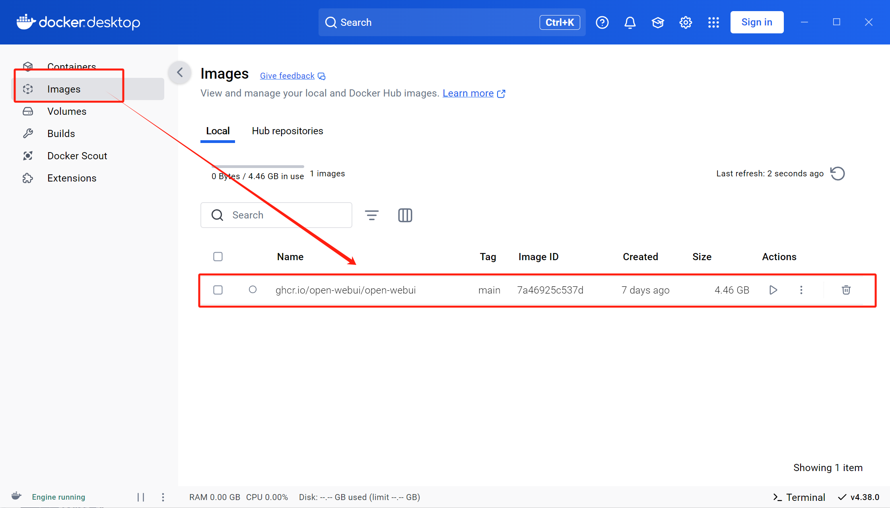

ai学习笔记（win系统）
WK1-ai部署
Day01-api的使用-openai库+上下文记忆+gradio界面
（背景介绍部分未总结）
折叠day01课程笔记
openai库的调用（直接调用+autogen使用）
折叠长代码块
import openai import os openai.api_key = os.getenv("GUIJI_API") openai.api_base = "https://api.siliconflow.cn/v1" model_id = "deepseek-ai/DeepSeek-R1-Distill-Qwen-7B" messages = [ {"role": "system", "content": "你是一个老师"}, {"role": "user", "content": "你好，你是谁"}, ] response = openai.chat.completions.create( model=model_id, messages=messages, stream=True) for i in response: print(i.choices[0]["delta"]["content"], end="")import autogen import os from autogen import ConversableAgent api_key = os.getenv("GUIJI_API") # 引入两个模型，分别为千问和蒸馏的 deepseek，并设置标签稍后便于选用 llm_config = { "config_list": [ { "model": "deepseek-ai/DeepSeek-R1-Distill-Qwen-7B", "base_url": "https://api.siliconflow.cn/v1", "api_key": api_key, "tags": ["deepseek"], }, { "model": "Qwen/Qwen2.5-7B-Instruct", "base_url": "https://api.siliconflow.cn/v1", "api_key": api_key, "tags": ["qianwen"], } ] } # 选用标签为 "deepseek" 的模型作为 agent filter_model = {"tags": ["deepseek"]} # 修正为 deepseek config_model = autogen.filter_config(llm_config["config_list"], filter_model) agent_deepseek = ConversableAgent( name="deepseek", llm_config={"config_list": config_model} ) # 使用 agent 输入 message，返回回答 reply = agent_deepseek.generate_reply( messages=[ { "role": "user", # 用户输入 "content":"" } ] ) print(reply)
如何增加记忆-循环传递上下文逻辑
折叠长代码块
import autogen from openai import OpenAI import os from autogen import ConversableAgent api_key = os.getenv('GUIJI_API') # 引入两个模型，分别为千问和蒸馏的deepseek，并设置标签稍后便于选用 llm_config = {"config_list": [{"model": "Qwen/Qwen2.5-7B-Instruct", "base_url": "https://api.siliconflow.cn/v1", "api_key": api_key, "tags": ["qianwen"], }, {"model": "deepseek-ai/DeepSeek-R1-Distill-Qwen-7B", "base_url": "https://api.siliconflow.cn/v1", "api_key": api_key, "tags": ["deepseek"], } ] } # 选用标签为“deepseek”的模型作为agent filter_model = {"tags": ["deepseek"]} config_model = autogen.filter_config(llm_config["config_list"], filter_model) agent = ConversableAgent( name="deepseek", llm_config={"config_list": config_model} ) # 使用 agent 输入 message，返回回答 def generate_response(prompt, history): # 初始化输入记录 messages = [] if history: messages.extend(history) messages.append({"role": "user", "content": prompt}) # 生成回复 reply = agent.generate_reply( messages=messages ) if not history: history = [] # 更新历史记录 history.append({"role": "user", "content": prompt}) history.append({"role": "assistant", "content": reply}) return reply, history # 返回 reply 和更新后的 history if __name__ == '__main__': conversation_history = [] while True: user_input = input("你，说话！（退出 为退出指令）") if user_input == "退出": break reply, conversation_history = generate_response(user_input, conversation_history) print(reply)
用gradio库包装简单界面
折叠长代码块
import autogen from openai import OpenAI import os from autogen import ConversableAgent import gradio import os import json config_file = 'llm_config.json' default_config = { "config_list": [ { "model": "Qwen/Qwen2.5-7B-Instruct", "base_url": "https://api.siliconflow.cn/v1", "tags": ["qianwen"] }, { "model": "deepseek-ai/DeepSeek-R1-Distill-Qwen-7B", "base_url": "https://api.siliconflow.cn/v1", "tags": ["deepseek"] } ] } if not os.path.exists(config_file): with open(config_file, 'w') as file: json.dump(default_config, file) print(f"已创建默认配置文件 {config_file}") with open(config_file, 'r') as file: config_data = json.load(file) # 从环境变量中获取 API 密钥，并提供默认值或抛出异常 api_key = os.getenv('GUIJI_API') if not api_key: raise ValueError("API key is not set in environment variables") # 读取配置文件以获取模型配置 def load_llm_config(config_file='llm_config.json'): try: with open(config_file, 'r') as file: config_data = json.load(file) if "config_list" not in config_data: # 如果缺少config_list键，则使用默认配置 print(f"Warning: Missing 'config_list' key in configuration file {config_file}. Using default configuration.") return default_config return config_data except FileNotFoundError: raise FileNotFoundError(f"Configuration file {config_file} not found") except json.JSONDecodeError: raise ValueError(f"Invalid JSON format in configuration file {config_file}") # 示例配置文件内容 (llm_config.json) """ { "config_list": [ { "model": "Qwen/Qwen2.5-7B-Instruct", "base_url": "https://api.siliconflow.cn/v1", "tags": ["qianwen"] }, { "model": "deepseek-ai/DeepSeek-R1-Distill-Qwen-7B", "base_url": "https://api.siliconflow.cn/v1", "tags": ["deepseek"] } ] } """ # 加载配置并添加 API 密钥 llm_config = load_llm_config() for config in llm_config["config_list"]: config["api_key"] = api_key #选用标签为“deepseek”的模型作为agent filter_model = {"tags": ["deepseek"]} config_model = autogen.filter_config(llm_config["config_list"], filter_model) agent = ConversableAgent( name = "deepseek", llm_config = {"config_list": config_model} ) # 使用 agent 输入 message，返回回答 def generate_response(prompt, history): # 初始化输入记录 messages = [] if history: messages.extend(history) messages.append({"role": "user", "content": prompt}) # 生成回复 reply = agent.generate_reply(messages=messages) if not history: history = [] # 用append更新历史记录 history.append({"role": "user", "content": prompt}) history.append({"role": "assistant", "content": reply}) return reply, history # 返回 reply 和更新后的 history def chat_ui_gr(user_input, conversation_state = gradio.State([]), api_key = api_key, base_url = "https://api.siliconflow.cn/v1", model_id = "deepseek-ai/DeepSeek-R1-Distill-Qwen-7B"): conversation_history = conversation_state #获取对话聊天状态 reply,conversation_history = generate_response(user_input, conversation_history) #对代码稍作修改，聊天函数更改第二个参api，删掉，后两个参：url和model return f"机器人：{reply}",conversation_history # conversation_history.append({"role": "user", "content": user_input}) #更新会话历史 # conversation_history.append({"role": "assistant", "content": reply})#本段冗余，直接删掉 #删掉后改为使用generate_response返回的history进行记忆 iface = gradio.Interface( fn = chat_ui_gr, inputs = [ gradio.Textbox(lines = 2, placeholder = "说啊？说词儿啊？", label = "my问题"), gradio.State([]) #储存会话历史 ], outputs = [ gradio.Textbox(label = "机器人回答"), gradio.State() #会话历史（未输出给用户） ], title = "机器人窗口", description = "基于蒸馏版deepseek的聊天机器人", examples = [ ["你是什么模型？"],["1+1=多少？"],["刚才的计算答案等于多少？"] ] ) iface.launch(share = True)
Day02-ollama本地部署+docker+webui界面可视化
折叠讲义（预览需时间，建议回顾的时候下载下来再用）（不折叠写笔记的时候也太卡了….）
DeepSeek-R1+Ollama可视化本地部署-讲义
折叠day02课程笔记
ollama+docker内的pull准备
ollama拉取模型+通过环境变量设置下载目录
ollama常见指令介绍：
ollama serve ollama create ollama show ollama run ollama pull ollama push此处使用如下命令拉取deepseek镜像，稍后使用
ollama pull deepseek-r1:7b如需修改下载位置，则添加环境变量OLLAMA_MODELS，值为D:\ollama\models，也就是目标下载目录
docker拉取webui镜像
docker pull ghcr.io/open-webui/open-webui:cuda之后即可再docker desktop内的镜像页面查看到它，随时可将它启动为容器，如下图
 如下命令，即可使用该镜像启动一个端口为3000：8080的容器，意味着，可以通过本地的3000端口访问webui容器，不过需要确保ollama提供的端口为8080并且无占用，可以通过环境变量这样设置OLLAMA_HOST，0.0.0.0:8080
docker run -d -p 3000:8080 --add-host=host.docker.internal:host-gateway -v open-webui:/app/backend/data --name open-webui --restart always ghcr.io/open-webui/open-webui:main
{kind=link}
Day03-云服务器端部署模型（含vllm）
折叠讲义（预览需时间，建议回顾的时候下载下来再用）（不折叠写笔记的时候也太卡了….）
折叠day03课程笔记
魔搭社区下载模型—首页 · 魔搭社区
提供了以下几种下载方式，比较推荐sdk下载（在服务器端的jupyter，ipynb文件内run即可），极不推荐git下载

下载后需根据介绍页的测试用例在服务器端的运行结果，补充缺少的依赖库，此处运行无报错，并无需要补充，所以直接进行下一步
vllm框架启动模型
conda create -n myenv python=3.10 -y conda activate myenv #⽼版本conda可能需要先⽤source activate # Install vLLM with CUDA 12.1. pip install vllm再通过vllm框架直接启动该模型，注意替换模型名称
python -m vllm.entrypoints.openai.api_server \--model /root/autodl-tmp/deepseek-ai/DeepSeek-R1-Distill-Qwen-7B \--served-model-name DeepSeek-R1-Distill-Qwen-7B \ --max-model-len=2048启动成功后自动从终端进入模型问答交互
(补充：可以用ssh连接通过本地端口访问服务器，已欠费…暂无展示)
Day04-anaconda+部分编程技巧
折叠day04课程笔记(只针对记录了未完全掌握部分便于回顾)
多行代码合并为一行 【Crtl+Shift+J】
包装代码 【Crtl+Alt+T】
在上方插入新行 【Ctrl + Alt + Enter】
在下方插入新行 【Shift + Enter】
上下移动选中代码 【Alt + Shift + 上、下键】
复制代码 【Ctrl + D】
折叠代码 【Ctrl + -】
全局查找 【Ctrl + Shift+F】
Day05-提示词使用技巧和基础模板介绍
折叠讲义（预览需时间，建议回顾的时候下载下来再用）（不折叠写笔记的时候也太卡了….）
折叠day05课程笔记
通用框架：人物形象+上下文背景+具体任务+限制条件+期望输出+少样示例
原理解释：
清晰指令+上下⽂本⾝就是种“奖励”
设定约束条件就是种“惩罚”
提供⽰例就是“奖励模板”
通过迭代优化提⽰词，不断“奖励”模型部分技巧：（Takeadeepbreath）（Let’sthinkstepbystep），分治法（PromptChain-论文大纲逐阶段生成）， PromptTuning（适用于少样本模型或零样本模型微调），Prompt逆向
WK2-rag+微调学习笔记
Day01 rag背景介绍
Day02 文件直接加载
各种文件的直接加载方式代码
#从指定的pdf文件中提取所有文本内容 from pdfminer.high_level import extract_text #用于解析pdf文件，按页面 from pdfminer.high_level import extract_pages #LTTextBox 文档中的文本框，LTTextLine代表文本框中的单行文本 from pdfminer.layout import LTTextBox, LTTextLine #定义一个函数，函数：parse_pdf,参数：file_path(文件路径)， 返回解析后文件的内容 def parse_pdf(file_path): text = extract_text(file_path) return text #定义一个名为parse_pdf_page的函数，参数也设置为文件路径，解析pdf文件，按页解析 def parse_pdf_page(file_path): # 逐页获取pdf文件的布局元素 for pages in extract_pages(file_path): #遍历当前页面每一个元素 for element in pages: #判断当前元素是否为LTTextBox 类型（文本框） if isinstance(element, LTTextBox): #遍历文本框的每个子元素 for text_line in element: #判断是否是单行文本 if isinstance(text_line, LTTextLine): #打印 print(text_line.get_text()) if __name__ == '__main__': #print(parse_pdf(r"C:\Users\admin\Desktop\0311demo\course05-DeepSeek提示词技巧及实践-讲义.pdf")) parse_pdf_page(r"C:\Users\admin\Desktop\0311demo\course05-DeepSeek提示词技巧及实践-讲义.pdf")# 从 docx 库中导入 Document 类，用于处理 Word 文档 from docx import Document def parse_docx(file_path): """ 该函数用于解析 Word 文档（.docx 格式），打印文档中表格的内容，并返回文档段落文本的拼接结果。 :param file_path: Word 文档的文件路径 :return: 文档中所有段落文本拼接成的字符串，段落之间用换行符分隔 """ # 打开指定路径的 Word 文档，创建一个 Document 对象 doc = Document(file_path) # 遍历文档中的所有表格 for table in doc.tables: # 遍历当前表格的每一行 for row in table.rows: # 遍历当前行的每一个单元格 for cell in row.cells: # 打印单元格中的文本内容，并以空格结尾 print(cell.text, end=" ") # 打印完一行单元格内容后换行 print() # 遍历文档中的所有段落，将每个段落的文本提取出来 # 然后使用换行符将这些段落文本连接成一个字符串 return "\n".join([para.text for para in doc.paragraphs]) if __name__ == '__main__': print(parse_docx(r'C:\Users\admin\Desktop\0311demo\丁子健.docx'))import openpyxl #创建一个函数，读取excel文件(.xlsx格式)，file_path参数：文件路径 def parse_xlsx(file_path): #加载excel文件 workbook = openpyxl.load_workbook(file_path) #活动工作表，默认的 sheet = workbook.active #储存从excel工作表中提取出来的每一行数据 data = [] #sheet.iter_rows 遍历活动工作表中的每一行，values_only = Ture只获取单元格中的实际值，不包含单元格其他属性 for row in sheet.iter_rows(values_only = True): #将遍历的单元格内容追加到data列表中 data.append(row) return data if __name__ == '__main__': print(parse_xlsx(r'C:\Users\admin\Desktop\0311demo\新建 Microsoft Excel 工作表.xlsx'))def parse_txt(file_path): try: with open(file_path, 'r', encoding = 'utf-8') as file: return file.read() except Exception as e: print(f'好像读取文件错了嗷') if __name__ == '__main__': print(parse_txt(r'C:\Users\admin\Desktop\0311demo\新建文本文档.txt'))import json def parse_json(file_path): with open(file_path, 'r', encoding = 'utf-8') as file: return json.load(file) if __name__ == "__main__": print(parse_json(r'C:\Users\admin\Desktop\0311demo\001.json'))
Day03 使用框架加载文件+段落切分（含重复段）
框架加载文件代码
import nltk nltk.download('punkt_tab') from langchain_unstructured import UnstructuredLoader file_path=r'C:\Users\admin\Desktop\pyProDay02\files\abcd.docx' #mode="single"，加载docx文件输出为一整个文本内容 #mode 参数可以设置为'elements',表示根据换行来切分 loader = UnstructuredLoader(file_path, mode="single") #加载docx，解析为一个或多个Document对象,对象存储在一个列表中 documents=loader.load() for doc in documents: print(doc.page_content)from langchain_community.document_loaders import PyPDFLoader #定义变量，存储要加载的pdf文件 file_path=r'C:\Users\admin\Desktop\pyProDay02\files\RAG介绍及理论基础-讲义.pdf' #加载pdf文件，参数：路径文件 loader =PyPDFLoader(file_path) #读取pdf内容，解析为一个或多个Document对象，对象存储在一个列表中 documents =loader.load() for doc in documents: print(doc.page_content) print('='*100) print('按页打印的内容') print('='*100) #按页分割文档 pages =loader.load_and_split() #遍历每一页 for i,page in enumerate(pages): print(f'第{i+1}页内容:') print(page.page_content) print('-'*50)from langchain_unstructured import UnstructuredLoader file_path=r'C:\Users\admin\Desktop\pyProDay02\files\本地部署.txt' loader =UnstructuredLoader(file_path,mode='single') documents =loader.load() for doc in documents: print(doc.page_content)from langchain_unstructured import UnstructuredLoader file_path=r'C:\Users\admin\Desktop\pyProDay02\files\lianxi2.xlsx' loader =UnstructuredLoader(file_path,mode='single') documents =loader.load() for doc in documents: print(doc.page_content)
直接切分段落代码
from pdfminer.high_level import extract_text text =extract_text(r'C:\Users\admin\Desktop\pyProDay02\files\RAG介绍及理论基础-讲义.pdf') def split_text_with_overlap(text,chunk_size=500,overlap=100): assert overlap <chunk_size,'重叠部分大小要小于每个段落的大小' #初始化起始位置和结束位置为0 start = end = 0 #当结束位置小于文本总长度时候，继续循环分割文本 while end <len(text): #计算当前段落的结束位置，取起始位置加上段落大小和文本总长度 的 较小值 #确保不会超过文本的范围 end =min(start +chunk_size,len(text)) #将当前分割出的段落返回，每次调用的时候返回一个段落，节省内存 yield text[start:end] #更新起始位置，为下一次分割做准备,起始位置为当前结束位置减去重叠部分的大小 start = end -overlap if __name__ == '__main__': for i,chunk in enumerate(split_text_with_overlap(text)): print(f"第{i+1}段:\n{chunk}\n{'='*50}\n")for和while的本质区别：已知循环次数用for，未知循环次数用while
框架切分段落代码
from langchain_community.document_loaders import UnstructuredFileLoader from langchain_community.document_loaders import PyPDFLoader #美化打印复杂的数据结构 from pprint import pprint file_path=r'C:\Users\admin\Desktop\pyProDay02\files\RAG介绍及理论基础-讲义.pdf' loader =PyPDFLoader(file_path) #基于字符文本分割器，将文本按指定规则分割成多个块 from langchain.text_splitter import CharacterTextSplitter #递归字符文本分割器，合适的分隔符进行分割 from langchain.text_splitter import RecursiveCharacterTextSplitter #创建一个CharacterTextSplitter的对象，用户进行文本分割 text_splitter=CharacterTextSplitter( #换行符分割 separator="\n\n", #每个分割块的最大字符 chunk_size=300, #重叠的字符数 chunk_overlap=50, length_function=len, ) #调用loader对象的load_and_split方法，将文本分割器作为参数传入 #该方法加载PDF文件，使用指定的文本分割器将文本分割成多个块 #分割后的块存储在text text =loader.load_and_split(text_splitter=text_splitter) print(text) #遍历文本 for index,block in enumerate(text,start=1): print(f"第{index}个文本内容:") print(block.page_content) print("*"*100)
Day04 Embedding模型部署
自注意力机制：自动找到重点，关注重要的部分，忽略不重要的部分自动处理信息
如何快速判断import的是方法还是类？—已经会了
余弦相似度原理举例：类似通过夹角余弦值判断向量是否相似
欧几里得距离：坐标差平方再开方，算出两点的直线距离
Transformer，encoder，decoder，embedding，RAG，BERT之间的关系，联系和区别？搜完了懂了
Transformer架构：Encoder-Decoder：这篇文章讲的看起来很流畅，待读
复习自检———————口头解释以下图【所有细节】
文本相似意义

rag中embedding作用

encoder和decoder联系（BERT，GPT）

encoder

注意力

参数

BERT

decoder+decoder block

直接调用阿里API代码
import dashscope from http import HTTPStatus import os def embed_with_str(): resp = dashscope.TextEmbedding.call( model = dashscope.TextEmbedding.Models.text_embedding_v3, input = '活动活动', apikey = os.getenv("AL_API_KEY") ) if resp.status_code == HTTPStatus.OK: print(resp) else: print(resp) if __name__ == "__main__": embed_with_str()
本地部署Embedding代码
from transformers import AutoTokenizer, AutoModel import torch from pdfminer.high_level import extract_text model_path = r"E:\bge-large-zh-v1___5" pdf_path = r'C:\Users\admin\Desktop\text1\丁子健.pdf' tokenizer = AutoTokenizer.from_pretrained(model_path) model = AutoModel.from_pretrained(model_path) pdf_text = extract_text(pdf_path) sentence = pdf_text.split("||") encoder_input = tokenizer(sentence, max_length = 512, padding = True, truncation = True, return_tensors = 'pt') with torch.no_gard(): output = model(**encoder_input) embeddings = output.last_hidden_state[0][:, 0] for i in enumerate (embeddings): print(i)
相似度对比代码
from transformers import AutoModel,AutoTokenizer import torch import torch.nn.functional as F #本地下载的模型路径 model_path = r'C:\Users\xupengcheng\.cache\modelscope\hub\models\BAAI\bge-large-zh-v1___5' #加载分词器 tokenizer=AutoTokenizer.from_pretrained(model_path) #加载模型 model =AutoModel.from_pretrained(model_path) text_list=['你是谁','我是老师'] encode_input=tokenizer(text_list,max_length=512,padding=True,truncation=True,return_tensors='pt') with torch.no_grad(): model_output=model(**encode_input) sentence_embedding =model_output[0][:,0] #取出第一个句子 tensor_a=sentence_embedding[0] #取出第二个句子 tensor_b=sentence_embedding[1] #计算两个句子嵌入向量之间余弦相似度,dim在第一个维度上进行计算 cosine_similarity=F.cosine_similarity(tensor_a,tensor_b,dim=0) print(f'cosine_similarity:{cosine_similarity.item()}')
Day05 向量数据库
代码段
#json数据集,解析json数据集，向量化数据集，存储在chroma里面，提问，结果显示 import json #os模块提供了操作系统交互功能，比如：文件和目录 import os #导入向量数据库 import chromadb #从transformers库中导入，模型应用和分词器（将文本转换成模型可以处理的输入格式） from transformers import AutoModel,AutoTokenizer #用于训练和推理模型 import torch #本地模型（用于文本向量化） model_path = r"E:\bge-large-zh-v1___5" tokenizer=AutoTokenizer.from_pretrained(model_path) model=AutoModel.from_pretrained(model_path) #解释json文件,file_path文件路径 def json_parse(file_path): with open(file_path,'r',encoding='utf-8') as file: data =json.load(file) #初始化空列表,存储解析后的结果 result=[] #遍历解析后的json数据每一个元素 for item in data: #从元素中提取k_qa_content字段的值 k_qa_content =item['k_qa_content'] #值分割，maxsplit=1最多分割一次 #分别存入keyword,answer keyword,answer =k_qa_content.split('#',maxsplit=1) result.append([keyword,answer]) return result #将输入的文本转换为向量表示,texts:参数，包含一个或多个文本 def embed_text(texts): #texts 需要向量化的文本 #return_tensors='pt' 返回pyTorch张量 #padding=True 文本填充，使它们具有相同长度 #truncation=True 如果文本从长度超过最大则截断 #max_length=512 最大长度为512个词元 inputs =tokenizer(texts,return_tensors='pt',padding=True,truncation=True,max_length=512) #不计算梯度上下文环境进行推理，节省内存和计算资源 with torch.no_grad(): outputs=model(**inputs) #向量化后的数字转换成列表 #numpy() 转数组 #tolist() 转列表 embeddings= outputs.last_hidden_state[:,0,:].numpy().tolist() return embeddings #指定的路径下的所有json文件，向量化，将结果存储在chroma数据库中 def run(all_file_path): #获取指定目录下的所有文件名 file_names =os.listdir(all_file_path) #遍历所有的文件名 for file_name in file_names: #data_path/data_source.json file_path =os.path.join(all_file_path,file_name) print(file_path) #解析当前json文件，得到关键词和答案的列表 text_list =json_parse(file_path) #存储关键词 keyword_list=[] #存储答案 answer_list=[] #遍历解析文本列表 for text in text_list: keyword_list.append(text[0]) answer_list.append({'answer':text[1]}) #调用函数embed_text，本地bge模型对关键词列表进行向量化 embedding_list=embed_text(keyword_list) #判断向量化结果是否为列表类型 if isinstance(embedding_list, list): collection=client.get_or_create_collection(name='chromadb_myClass') #生成id len_ids =len(text_list) ids_list =[] for i in range(len_ids): #文件名+序号=ids,生成id加入到列表中 ids_list.append(str(file_name)+str(i)) #将向量化结果、关键词、答案元数据、id列表添加到chromaDB集合中 collection.add( embeddings=embedding_list, documents=keyword_list, metadatas=answer_list, ids=ids_list ) else: return 'error' return '向量化完成' if __name__ == '__main__': # 创建一个 Chroma 客户端 client = chromadb.Client() # client = chromadb.HttpClient(host='localhost', port=8000) all_file_path="data_path" collection = client.get_or_create_collection(name='chromadb_myClass') run(all_file_path) input_text='类和对象' search_embedding= embed_text([input_text]) query_result =collection.query( query_embeddings=search_embedding, n_results=3 ) print(query_result)
WK3-Gradio+rag+embedding
Day01 Gradio库
绘制+事件 基础demo代码块
import gradio as gr def greet(name,intensity): return "hello,"+name + "!"* int(intensity) demo=gr.Interface( #关联函数名称 fn=greet, #输入 inputs=["text","slider"], #输出 outputs=['text'] ) demo.launch()import gradio as gr def greet(input_name): return "hello,"+input_name+"!" #创建自定义 页面内容 with gr.Blocks() as demo: #创建一个文本框，提示:Name input_name=gr.Textbox(label='Name') output_text=gr.Textbox(label='output') #创建按钮，显示名称是：保存 btn=gr.Button("保存") #给按钮添加事件（单击）,fn=函数名,inputs=输入对象，outputs=输出对象 btn.click(fn=greet,inputs=input_name,outputs=output_text) #启动 demo.launch()import gradio as gr def reset_text(input): return "" with gr.Blocks() as demo: input=gr.Textbox(label='请输入文本') reset_btn=gr.Button('重置') reset_btn.click(fn=reset_text,inputs=input,outputs=input) demo.launch()import gradio as gr def messages(name,age,phone): msg ='姓名:'+name+',年龄:'+age+',电话:'+phone return msg with gr.Blocks() as demo: name =gr.Textbox(label='姓名') age =gr.Textbox(label='年龄') phone =gr.Textbox(label='电话') output_msg =gr.Textbox(label='输出人员信息') submit_btn =gr.Button('注册') submit_btn.click(fn=messages,inputs=[name,age,phone],outputs=output_msg) demo.launch()import gradio as gr def greet(name): return f'hello,{name}!' choices=['科员','科长','处长','局长'] dd =gr.Dropdown(choices=choices,label='请选择职务') app =gr.Interface(fn=greet,inputs=dd,outputs='text') app.launch()import gradio as gr def greet(name): return name with gr.Blocks() as demo: #添加一行 with gr.Row(): #添加一列 with gr.Column(): input =gr.Textbox(label='请输入姓名') #添加一列 with gr.Column(): output= gr.Textbox(label='输出内容') #添加一行 with gr.Row(): submit_btn=gr.Button('提交') submit_btn.click(fn=greet,inputs=input,outputs=output) demo.launch()
embedding.py（仅调用api实现）
import torch #调用阿里云大模型服务 import dashscope import os #获取http请求的状态码,判断请求是否成功 from http import HTTPStatus #定义个函数，用于使用qwen模型对输入的文本列表进行向量化处理 def embed_with_qwen(text_list): #设置dashscope的api秘钥,访问阿里云的相关服务 dashscope.api_key=os.getenv('AL_API_KEY') #初始化一个空列表，储存每个文本的嵌入向量s embedding_list=[] #遍历输入的文本列表 for text in text_list: #调用dashscope的TextEmbedding服务 resp =dashscope.TextEmbedding.call( #使用模型为text_embedding_v2 model =dashscope.TextEmbedding.Models.text_embedding_v2, #要进行向量化的处理文本 input=text ) #检查请求状态码是否为200，表示请求成功 if resp.status_code ==HTTPStatus.OK: #提取向量 embedding =resp.output['embeddings'][0]['embedding'] #embedding_list中 embedding_list.append(embedding) else: print(resp) return resp return embedding_list #使用本地大模型，BGE模型对输入的文本列表进行嵌入向量处理 def embed_with_bge(text_list,tokenizer,model): encode_input=tokenizer(text_list,max_length=512,padding=True,truncation=True,return_tendsors='pt') with torch.no_grad(): model_output=model(**encode_input) sentence_embeddings=model_output[0][:,0] return sentence_embeddings.tolist() if __name__ == '__main__': print(embed_with_qwen(['今天星期一']))
gradio_demo.py
import gradio as gr from zhipuai import ZhipuAI import time with gr.Blocks() as demo: gr.Markdown("# 智能助手demo") #创建一个聊天机器人组件，用于显示对话历史，数据类型为消息列表 chatbot =gr.Chatbot(type="messages") #用户可以在这个文本框输入想要提问给智能助手的内容 msg=gr.Textbox() #创建清空按钮 clear=gr.Button("Clear") #将用户输入的消息添加到历史记录中，标记为用户角色 def user(user_messages,history:list): return "",history+[{"role":"user","content":user_messages}] def bot(history : list): #创建智谱客户端实例，调用智谱的服务 client=ZhipuAI(api_key="你的智谱api-key") messages =history response =client.chat.completions.create( model="glm-4", #指定模型 glm-4 messages=messages, #历史的提问和回答内容传给ai stream=True, #流式输出 ) #在历史记录中添加一个空的助手回复消息 history.append({"role":"assistant","content":""}) #遍历响应的每个数据块 for chunk in response: #讲当前的数据块的内容追加到助手回复消息中 history[-1]['content']+=chunk.choices[0].delta.content #让用户能看到回复逐步生成的过程,延迟0.05秒 time.sleep(0.05) #实时更新流式界面 yield history #user:用户在文本框中点击回车键,消息的提交，调用user函数处理用户输入 #[msg,chatbot]:文本框输入和聊天机器人的历史记录作为输入参数 #[msg,chatbot]:将处理后的结果更新到文本框和聊天机器人组件中 #queue=False: 表示不使用消息队列处理该事件 msg.submit(user,[msg,chatbot],[msg,chatbot],queue=False).then( #处理完用户输入后，接着调用bot函数，获取助手回复 bot,chatbot,chatbot ) #清空按钮点击事件 #lambda :None 匿名函数，不做任何操作,只触发清空操作 #None 没有输出参数 #chatbot 聊天机器人内容清空 # queue=False: 表示不使用消息队列处理该事件 clear.click(lambda :None,None,chatbot,queue=False) #启动 demo.launch()
chromadb_delete.py
import chromadb try: client =chromadb.HttpClient(host='localhost',port=8000) collections =client.list_collections() print(collections) col_names =collections for name in col_names: client.delete_collection(name=name) print(f'成功删除集合:{name}') except Exception as e: print(f'发生错误:{e}')
chromadb_query.py
import chromadb try: client =chromadb.HttpClient(host='localhost',port=8000) collections=client.list_collections() print(collections) collection_name ='test8899' if collection_name in collections: col =client.get_collection(collection_name) print(col.peek()) else: print(f'集合{collection_name}不存在') except Exception as e: print(f'发生错误:{e}')
Day02 rag集成 —— 类方法调用+gradio.File（文件路径拖动获取）

main.py
import gradio as gr from chromadb import HttpClient from file_to_chromadb import run as file_to_chromadb from RAG import Robot import chromadb from zhipuai import ZhipuAI #获取数据库集合列表 def get_db_list(): client =chromadb.HttpClient(host='localhost',port=8000) #获取所有集合列表 collections=client.list_collections() return collections #创建数据库 def build_db(file,dbname): try: #调用函数构建数据库 res =file_to_chromadb(file,dbname) if res == "success": return gr.Info("数据库创建成功",duration=5) else: return gr.Error("数据库创建失败",duration=5) except Exception as e: print(f"构建数据库出错：{e}") return gr.Error("数据库构建失败",duration=5) #刷新数据库选择项 def refresh_db_choices(): dbList =get_db_list() return gr.update(choices=dbList) #处理用户输入 def user(user_message,history:list): #首次问答，添加提示词 if len(history) == 0: history.append({"role": "system","content": "你是一个名叫Molly的教育专家，对于用户提问的问题，你需要按照给出的【参考资料】对问题进行回答。你的回答需要按照以下两个步骤：1.分析用户问题和参考资料，判断是否有【参考资料】可以解答用户的问题，如果有则说明【参考资料】的名称，如果没有，则首先告知用户没有任何可参考的资料，需要注意答案的准确性。2.根据资料内容对问题进行解答。"}) history.append({"role":"user","content":user_message}) return "",history #处理机器人回复 def bot(history:list,dbname): #获取用户最新输入文本 input_text =history[-1]['content'] #调用机器人的GAG获取参考资料 result_rag =robot.RAG(input_text,dbname) #参考资料添加到用户输入中 history[-1]['content']+=f"\n参考资料：\n{result_rag}" client =ZhipuAI(api_key='7b16305a776744253ac1bad218a8f90c.p1EJxuKGhDmPKxfF') messages=history response =client.chat.completions.create( model="glm-4", messages=messages, stream=True ) #使用"参考资料"作为分隔符，把文档分开 parts=history[-1]['content'].split("参考资料：",1) #提第一个参考资料前的内容 history[-1]['content']=parts[0].strip() history.append({"role": "assistant","content": ""}) for chunk in response: #模型回复的内容逐步添加到助手回复消息中 history[-1]['content']+=chunk.choices[0].delta.content yield history robot=Robot() dbList =get_db_list() with gr.Blocks() as demo: with gr.Row(): gr.Markdown("# 智能学习助手") with gr.Row(): with gr.Column(scale=2): chatbot =gr.Chatbot(type="messages",label='对话框',height=500) question =gr.Textbox(label='请输入') clear_btn =gr.Button("clear") gr.Examples(["介绍一下类对象","解释一下面向对象"],inputs=[question]) with gr.Column(scale=1): gr.Markdown("### 数据库构建") datafile =gr.Filex(type="filepath",label="上传文件") dbname=gr.Textbox(label='数据库名称') build_btn=gr.Button("开始构建") gr.Markdown("### 数据库选择") dbchoose =gr.Dropdown(choices=dbList,label="数据库名称") dbrefresh_btn=gr.Button("刷新") #用户在文本框中输入问题并提交时,调用user函数处理用户输入，然后调用bot函数获取机器人回复 question.submit(user,[question,chatbot],[question,chatbot],queue=False).then(bot,[chatbot,dbchoose],chatbot) #用户点击“开始构建”,调用函数build_db 创建数据库,解析文件，向量化，加入到数据库的集合中 build_btn.click(build_db,[datafile,dbname],[]) #点击“刷新”，调用函数refresh_db_choices，刷新数据库集合下拉选项 dbrefresh_btn.click(refresh_db_choices,outputs=dbchoose) #点击"clear"，清空聊天记录 clear_btn.click(lambda :None,None,chatbot,queue=False) #启动 demo.launch()
RAG.py
from zhipuai import ZhipuAI from embedding import embed_with_bge,embed_with_qwen import chromadb from transformers import AutoTokenizer,AutoModel import torch client =chromadb.HttpClient(host='localhost',port=8000) #定义一个生成器函数，实现流式对话输出 def chatglm_stream(input_text,history_list): client =ZhipuAI(api_key='7b16305a776744253ac1bad218a8f90c.p1EJxuKGhDmPKxfF') messages =history_list #在对话历史中添加用户最新输入 messages.append({"role":"user","content":f"{input_text}"}) #调用智谱AI的聊天完成借口，使用glm-4模型，流式输出 response =client.chat.completions.create( model='glm-4', messages=messages, stream=True, ) #遍历流式响应的每个数据块 for chunk in response: #从当前数据库中提取模型生成的回复内容 output =chunk.choices[0].delta.content #将回复内容逐个返回，实现流式输出 yield output #定义一个类，封装与对话机器人相关的功能 class Robot(): def __init__(self): #空字符串，存储文本向量 self.embedding="" #定义rag方法，实现检索增强生成功能 def RAG(self,input_text,dbname): #获得输入文本向量 #使用qwen的函数对输入文本进行向量化处理 search_embedding =embed_with_qwen([input_text]) #从chroma数据库客户端获得集合 collection =client.get_collection(name=dbname) #从向量数据库中检索与输入文本向量最相似的文档，数量设置为3个 result =collection.query( query_embeddings=search_embedding, n_results=3, ) #空字符串，存储文档和参考资料信息 result_all="" #遍历文档列表 for i in range(len(result['documents'][0])): #获取文档内容 result_documents=result['documents'][0][i] #获取参考资料内容 result_file =result['metadatas'][0][i]['answer'] #将文档内容和参考资料信息合并到result_all中 result_all+=result_documents+f"\n【参考资料】：{result_file}\n\n" return result_all def run_test(self): history_list = [{"role": "system","content": "你是一个名叫Molly的教育专家，对于用户提问的问题，你需要按照给出的【参考资料】对问题进行回答。你的回答需要按照以下两个步骤：1.分析用户问题和参考资料，判断是否有【参考资料】可以解答用户的问题，如果有则说明【参考资料】的名称，如果没有，则首先告知用户没有任何可参考的资料，需要注意答案的准确性。2.根据资料内容对问题进行解答。"}] while True: input_text =input('请输入:') if input_text =='exit': break dbname='test8899' result_rag=self.RAG(input_text,dbname) input_text =input_text+f'参考资料：\n{result_rag}' result =chatglm_stream(input_text,history_list) result_all="" for res in result_all: result_all+=res print(res,end="",flush=True) print("") message_input ={"role":"user","content":f"{input_text}"} history_list.append(message_input) message_output={"role":"assistant","content":f"{result_all}"} history_list.append(message_output) print(history_list) if __name__ == '__main__': robot =Robot() robot.run_test()
file_to_chromadb.py
#1、解析文件 2、解析后文件向量化 3、向量化后加入到数据库中 import json from embedding import embed_with_bge,embed_with_qwen import os import chromadb from transformers import AutoTokenizer,AutoModel #JSON文件解析 def json_parse(file): #以只读模式打开json文件，指定编码utf-8 with open(file,'r',encoding='utf-8') as file: #加载json文件 data =json.load(file) #创建空列表 result =[] #循环遍历data for item in data: #每个项k_qa_content,获取值 k_qa_content=item['k_qa_content'] #使用#作为分隔符，拆分关键词和答案 keyword,answer =k_qa_content.split('#',maxsplit=1) #拆分后的关键词和答案添加到result列表中 result.append([keyword,answer]) #返回处理后的数据列表 return result def run(file_path,dbname): #调用函数解析指定路径的json文件 text_list =json_parse(file_path) print(text_list) #空列表，存储关键词 keyword_list=[] #空列表,存储答案 answer_list=[] #遍历解析后的文件 for text in text_list: #每项中的关键词添加到keyword_list列表中 keyword_list.append(text[0]) #每项中的答案以字典形式添加到answer_list列表中 answer_list.append({"answer":text[1]}) #使用闭源模型API，调用embed_with_qwen函数对关键词列表进行向量化处理 embedding_list =embed_with_qwen(keyword_list) if type(embedding_list) == list: #创建chroma客户端，连接本地端口8000 client=chromadb.HttpClient(host='localhost',port=8000) #获取或创建指定名的集合 collection=client.get_or_create_collection(name=dbname) #创建ids： 数据库名+序列号 len_ids=len(text_list) ids_list=[] for i in range(len_ids): ids_list.append(str(dbname)+str(i)) #向集合中添加向量化数据，关键词，答案元数据和唯一标识id collection.add( embeddings=embedding_list, documents=keyword_list, metadatas=answer_list, ids=ids_list ) else : return 'error' print('向量化完成') return 'success' if __name__ == '__main__': file_path='data_path/python基础（1）.json' dbname='test8899' print(run(file_path, dbname))
embedding.py
# 导入 PyTorch 库，它是一个用于深度学习的开源库，提供了丰富的张量计算和自动求导功能 import torch # 导入 dashscope 库，用于调用阿里云的大模型服务，这里可能用于文本嵌入相关操作 import dashscope # 从 http 模块中导入 HTTPStatus 类，用于获取 HTTP 请求的状态码，方便后续判断请求是否成功 from http import HTTPStatus # 定义一个函数 embed_with_qwen，用于使用 Qwen 模型对输入的文本列表进行嵌入处理 def embed_with_qwen(text_list): # 设置 dashscope 的 API 密钥，该密钥用于访问阿里云的相关服务 dashscope.api_key = 'sk-eb40ccf62d6648dc92a16ecff1686efa' # 初始化一个空列表，用于存储每个文本的嵌入向量 embedding_list = [] # 遍历输入的文本列表 for text in text_list: # 调用 dashscope 的 TextEmbedding 服务，使用 text_embedding_v2 模型对当前文本进行嵌入处理 resp = dashscope.TextEmbedding.call( # 指定使用的模型为 text_embedding_v2 model=dashscope.TextEmbedding.Models.text_embedding_v2, # 要进行嵌入处理的文本 input=text ) # 检查请求的状态码是否为 HTTP 200（OK），表示请求成功 if resp.status_code == HTTPStatus.OK: # 从响应中提取嵌入向量 embedding = resp.output['embeddings'][0]['embedding'] # 将提取的嵌入向量添加到 embedding_list 中 embedding_list.append(embedding) else: # 如果请求失败，打印响应信息 print(resp) # 并返回响应对象，方便后续排查问题 return resp # 返回存储所有文本嵌入向量的列表 return embedding_list # 定义一个函数 embed_with_bge，用于使用 BGE 模型对输入的文本列表进行嵌入处理 def embed_with_bge(text_list, tokenizer, model): # 使用 tokenizer 对输入的文本列表进行编码处理，设置最大长度为 512，进行填充和截断操作，并将结果转换为 PyTorch 张量 encoded_input = tokenizer(text_list, max_length=512, padding=True, truncation=True, return_tensors='pt') # 开启一个无梯度计算的上下文环境，在推理过程中不需要计算梯度，这样可以节省内存和计算资源 with torch.no_grad(): # 将编码后的输入传递给模型进行推理 model_output = model(**encoded_input) # 进行池化操作，这里采用 CLS 池化，即取输出序列中第一个 token 的向量作为句子的表示 sentence_embeddings = model_output[0][:, 0] # 将 PyTorch 张量转换为 Python 列表 sentence_embeddings_list = sentence_embeddings.tolist() # 返回存储所有句子嵌入向量的列表 return sentence_embeddings_list # 程序的入口点，如果该脚本作为主程序运行，则执行以下代码 if __name__ == '__main__': # 调用 embed_with_qwen 函数对文本 "今天是个好日子" 进行嵌入处理，并打印结果 # 注意：这里传入的应该是一个列表，如 ["今天是个好日子"]，原代码写法有误 print(embed_with_qwen(["今天是个好日子"]))
Day03 梳理上一天的代码+自习-学习设计模式
设计模式六大基本原则：
开闭 → 开闭原则
里氏 → 里氏代换原则
倒 → 依赖倒转原则（“倒”转）
接口 → 接口隔离原则
迪米 → 迪米特法则
合 → 合成复用原则
Day04 召回+重排序
迭代器？
main.py
# 提问：骨折了怎么办？ ，大模型回答。 # 1.解析txt，向量化，存在向量数据库中。 # 2.问题向量化，检索数据库，召回（2种召回方式） # 3.重排序 # 4得到结果返回给大模型，输出 #--------------------------------------------------------- #基于BM25算法的文档检索功能 from langchain_community.retrievers import BM25Retriever #文档对象，对文档处理和操作 from langchain_core.documents import Document #数据类型 from typing import List #中文分词工具，可以将中文的文本分割成单个词语 import jieba #实现BM25算法 from rank_bm25 import BM25Okapi #长文本按照一定的规则递归的分割成较小的文本块 from langchain_text_splitters import RecursiveCharacterTextSplitter #高效处理向量数据库的库 from langchain_community.vectorstores import FAISS #从文本文件中加载文档数据 from langchain_community.document_loaders import TextLoader #与智谱AI进行交互，实现聊天对话功能 from langchain_community.chat_models import ChatZhipuAI #基于_huggingface 模型嵌入向量，将文本转换为向量表示 from langchain_huggingface import HuggingFaceEmbeddings #智谱AI from zhipuai import ZhipuAI #print(list(jieba.cut('今天的天气特别缓和'))) #1.加载文档 loader =TextLoader(r'C:\Users\admin\Desktop\rag_rank\medical_data.txt',encoding='utf-8') #加载 document=loader.load() #切割 text_splitter=RecursiveCharacterTextSplitter( chunk_size=500, chunk_overlap=0, length_function=len, separators=['\n'] ) docs =text_splitter.split_documents(document) #打印加载的文档 #print(docs) #2.分词 def preprocessing_func(text:str): return list(jieba.cut(text)) #3.1创建BM25召回器 #得到每个内容的片段 texts=[i.page_content for i in docs] #调用分词器，得到分词内容 texts_processed=[preprocessing_func(t) for t in texts] #得到召回器 vectorizer=BM25Okapi(texts_processed) #3.2创建向量的相似度召回器 #本地模型文件 model_path = r'E:\bge-large-zh-v1___5' #创建 embeddings=HuggingFaceEmbeddings(model_name=model_path) #第一次运行,保存数据 #db=FAISS.from_documents(docs,embeddings) #指定保存路径 #db.save_local(r'C:\Users\xupengcheng\PycharmProjects\pyRAGDay08\rag_rank\data') #第二次运行，加载数据 db =FAISS.load_local( r'C:\Users\admin\Desktop\rag_rank\data', embeddings=embeddings, allow_dangerous_deserialization=True #关闭警告 ) #4.1 BM25召回器 召回 bm25_res =vectorizer.get_top_n(preprocessing_func('骨折了怎么办?'),texts,n=10) #print('使用BM25召回器召回:',bm25_res) #print("="*50) #4.2 向量召回器 召回 vector_res=db.similarity_search('骨折了怎么办?',k=10) #print('向量数据库召回:',vector_res) #5.重排序（RRF） 把两路的召回结果相加，排序，得到key-value集合（得分，文档）,返回 文档 def rrf(vector_res:list[str],text_res:list[str],k:int =10 ,m:int =60): """ score = 1/(m+r1) +1/(m+r2) :param vector_res:向量召回的结果 :param text_res:BM25召回的结果 :param k:排序后的钱K个值 :param m:超参数(1-60) :return:排序后结果 """ doc_scores={} #rank 得分，每一个文档的id对应的得分 #第一个 for rank,doc_id in enumerate(vector_res): doc_scores[doc_id]= doc_scores.get(doc_id,0)+1/(m+rank) #第二个 for rank,doc_id in enumerate(text_res): doc_scores[doc_id]= doc_scores.get(doc_id,0)+1/(m+rank) #用户只关心文本，不想要得分，所以，只取文档内容 sorted_results=[doc for doc,_ in sorted(doc_scores.items(),key=lambda x:x[1],reverse=True)[:k]] return sorted_results #6.执行重排序 #RAG： #限定大语言模型不能使用超出索引数据之外的数据，必须根据检索结果，再回答。 #否则RAG的功能失效了，就是为了避免大模型自身存在的幻觉缺陷，不让它回答除了检索以外的结果 #文档生成器构建 #返回向量 vector_results =[i.page_content for i in vector_res] #返回BM25 text_results=[i for i in bm25_res] #调用重排序函数 rrf_res=rrf(vector_results,text_results) #print("="*100) #print("使用重排序后的结果:",rrf_res) #使用ai把检索出来的文档结果发给它，整合，输出 #定义一个字符串模版，prompt,用于模型提问提示信息 prompt=""" 任务目标：根据检索出的文档回答用户问题 任务要求： 1、不得脱离检索出的文档回答问题 2、若检索出的文档不包含用户问题的答案，请回答我不知道 用户问题: {} 检索出的文档: {} """ #创建一个智谱对象，指定模型 model=ChatZhipuAI( model='glm-4-plus', api_key='7b16305a776744253ac1bad218a8f90c.p1EJxuKGhDmPKxfF' ) #调用大模型 invoke，传入格式化后的提示信息，向模型提问，得到回答 res =model.invoke(prompt.format('骨折了应该怎么办?',''.join(rrf_res))) print(res.content)
Day05 文档梳理 RAG（检索增强生成）
WK4 项目实战
Day01 添加单选框
file_to_chroma.py（xlsx和json）
import json import os.path #从指定的pdf文件中提取所有文本内容 import dashscope import chromadb import openpyxl from embedding import embed_with_glm,embed_with_qwen client =chromadb.HttpClient(host='localhost',port=8000) #解析excel文件 def xlsx_parse(file_path): workbook=openpyxl.load_workbook(file_path) sheet =workbook.active text='' for row in sheet.iter_rows(values_only=True): text+=str(row) return text #解析pdf文件 def json_parse(file_path): with open(file_path,'r',encoding='utf-8') as file: return json.load(file) def split_text_with_overlap(text,chunk_size=1000,overlap=100): """ 将文本拆分为指定大小的段落，每个段落之间有重叠部分 :param text: 要处理的字符串 :param chunk_size: 每个段落的长度 :param overlap: 重叠字符数 :return: 拆分后的段落列表 """ start =end =0 text_list=[] while end<len(text): end =min(start+chunk_size,len(text)) #计算当前段落的结束位置，获取chunk_size和文本长度的较小值 text_list.append(text[start:end])#将当前段落追加到列表中 start =end - overlap #更新起始位置 return text_list def run(file_path:str,model_name,model_platform,dbname): text='' #1.解析 if file_path.endswith('.pdf'): #判断是.pdf格式文件，调用解析函数 pass elif file_path.endswith('.xlsx'): #判断是xlsx格式文件，调用解析函数 text=xlsx_parse(file_path) #2.拆分 text_list =split_text_with_overlap(text) #调用函数解析文本，返回拆分后段落列表 embedding_list=[] #存储文本的嵌入向量 ids_list=[] #存储文档唯一标识 document_list=text_list #拆分后的文本、段落列表 metadatas_list=[] #存储元数据 #3. 调用模型 if model_platform == 'ZhipuAI': embedding_list=embed_with_glm(text_list,model_name) #调用向量化zhipu函数，返回嵌入向量 elif model_platform == 'Bailian': embedding_list=embed_with_qwen(text_list,model_name)#调用向量化qwen函数，返回嵌入向量 #4. 构造向量数据库所需要的格式 if type(embedding_list) == list: collection =client.create_collection(dbname) #创建指定名称的集合 basename = os.path.basename(file_path) #获取文件路径的文件名部分 #遍历文档列表 for i in range(len(text_list)): ids_list.append(str(basename)+str(i)) #生成唯一标识添加到ids_list中s metadatas_list.append({'file_name':str(basename)}) #生成元数据并添加到metadatas_list中 #构造向量数据库，加入数据 collection.add( ids=ids_list, embeddings=embedding_list, documents=document_list, metadatas=metadatas_list ) else: return 'error' return 'success' if __name__ == '__main__': file_path =r'C:\Users\xupengcheng\PycharmProjects\pyRAGDay09\rag_gk\data_path\1_大学院校基础信息.xlsx' model_name='embedding-3' #指定模型名称 #model_name = dashscope.TextEmbedding.Models.text_embedding_v3 # 指定模型名称 model_patform='ZhipuAI' dbname='col02' print(run(file_path,model_name,model_patform,dbname)) print(client.get_collection(dbname).peek())
RAG.py
import chromadb from zhipuai import ZhipuAI from embedding import embed_with_glm,embed_with_qwen client =chromadb.HttpClient(host='localhost',port=8000) def chatglm_stream(question,history_list:list): chient =ZhipuAI(api_key='') history_list.append({'role':'user','content':f'{question}'})# 用户提问的问题添加到历史对话列表中 response=chient.chat.completions.create( model='glm-4', messages=history_list, stream=True #设置为流式返回结果 ) for chunk in response: output =chunk.choices[0].content yield output class Robot(): def __init__(self): self.embedding ='' def RAG(self,question,dbname): #使用函数生成问题的嵌入向量 search_embedding=embed_with_glm([question],model_name='embedding-3') col=client.get_collection(name=dbname) result =col.query( query_embeddings=search_embedding, #传入问题的嵌入向量进行查询 n_results=3 #设置返回的结果数3条 ) result_all='' #遍历查询结果中的文档列表 for i in range(len(result['documents'][0])): result_document =result['documents'][0][i] #文档内容 result_file =result['metadatas'][0][i]['file_name'] result_all+=f'{result_document}+\n【参考资料】:{result_file}\n\n' return result_all #返回拼接好的结果内容
embedding.py
import dashscope from zhipuai import ZhipuAI from http import HTTPStatus #函数 qwen模型生成文本嵌入 def embed_with_qwen(text_list,model_name): dashscope.api_key='' embedding_list=[] for text in text_list: try: resp =dashscope.TextEmbedding.call( model=model_name, input=text ) if resp.status_code == HTTPStatus.OK: embedding_list.append(resp.output['embeddings'][0]['embedding']) except Exception as e: print('调用qwen嵌入信息出错{e}') return embedding_list #函数 zhipu模型生成文本嵌入 def embed_with_glm(text_list,model_name): embedding_list=[] api_key='' client=ZhipuAI(api_key=api_key) for text in text_list: try: resp=client.embeddings.create( input=text, model=model_name ) embedding_list.append(resp.data[0].embedding) except Exception as e: print('调用zhipu嵌入信息出错{e}') return embedding_list if __name__ == '__main__': print(embed_with_glm(['今天的天气不错','今天星期一'],'embedding-3'))
main.py
import chromadb import gradio as gr from file_to_chroma import run as save_chroma from zhipuai import ZhipuAI from RAG import Robot def build_db(file,model_name,model_platform,dbname): res =save_chroma(file,model_name,model_platform,dbname) if res =='success': gr.Info('数据库创建成功',duration=2) elif res == 'error': gr.Error("数据库创建失败",duration=2) def update_dropdown(model_platform): if model_platform =='ZhipuAI': return gr.update(choices=['embedding-2','embedding-3'],value='embedding-3') elif model_platform =='Bailian': return gr.update(choices=['text-embedding-v1', 'text-embedding-v2','text-embedding-v3'], value='text-embedding-v3') else: return gr.update(choices=[],value=None) def user(user_message,history:list): if len(history) == 0: history.append({"role": "system", "content": ( "你是一个高考志愿智能问答系统，对于用户提问的问题，你需要按照给出的【参考资料】对问题进行回答。" "你的回答需要按照以下两个步骤：" "1.分析用户问题和参考资料，判断是否有【参考资料】可以解答用户的问题，如果有则说明【参考资料】的名称，" "如果没有，则首先告知用户没有任何可参考的资料，需要注意答案的准确性。" "2.根据资料内容对问题进行解答，若用户希望根据高考分数得到志愿推荐，那么首先关注学校的投档分，越接近越好，从好的学校推荐，并结合【参考资料】中的学校信息来说明。") }) history.append({'role':'user',"content":user_message}) return '',history def get_db_list(): client =chromadb.HttpClient() # 默认值,localhost,8000 collections =client.list_collections() return collections def dbref(): dblist=get_db_list() return gr.update(choices=dblist,multiselect=False) #multiselect禁止多选 def delete_db(dbchoice): client =chromadb.HttpClient() client.delete_collection(dbchoice) gr.Info("数据库删除成功",duration=2) def bot(history:list,dbname): input_text=history[-1]['content'] #用户最新输入的文本 result_rag =robot.RAG(input_text,dbname) #获取相关资料 history[-1]['content']+=f'\n【参考资料】：\n{result_rag}' client =ZhipuAI(api_key='7b16305a776744253ac1bad218a8f90c.p1EJxuKGhDmPKxfF') messages =history response =client.chat.completions.create( model='glm-4', messages=messages, stream=True ) parts =history[-1]['content'].split('参考资料：',1) history[-1]['content']=parts[0].strip() #提取第一个参考资料前的内容 history.append({'role':'assistant','content':""}) #添加一个空的助手回复 for chunk in response: history[-1]['content']+=chunk.choices[0].delta.content #逐步添加回复内容 yield history robot=Robot() dblist=get_db_list() #获取数据库列表 with gr.Blocks() as demo: with gr.Row(): gr.Markdown('# 高考政策通') with gr.Row(): with gr.Column(): chatbot=gr.Chatbot(label='对话框',type='messages',height=500) #创建聊天组件 question=gr.Textbox(label='请输入') # 创建输入文本框 clear_btn=gr.Button('clear') #创建清除按钮 gr.Examples(['介绍一下北京大学','介绍一下清华大学'],inputs=question) # 创建示例输入 with gr.Column(): gr.Markdown('### 请选择嵌入模型') model_platform=gr.Radio(label='嵌入模型',choices=['ZhipuAI','Bailian'],value='ZhipuAI') #创建单选框，默认值ZhipuAI model_name=gr.Dropdown(label='模型名称',choices=['embedding-2','embedding-3'],value='embedding-3') #模型名称下拉框 model_platform.change(fn=update_dropdown,inputs=model_platform,outputs=model_name) #监听模型选择变化，更新模型名称下的内容 datafile=gr.File(label='上传文件',type='filepath')#创建上传组件 dbname=gr.Textbox(label='数据库名称') build_btn =gr.Button('开始构建') dbchoice =gr.Dropdown(label='数据库名称',choices=dblist) with gr.Row(): dbref_btn =gr.Button('刷新') dbdel_btn =gr.Button('删除') question.submit(user,inputs=[question,chatbot],outputs=[question,chatbot]).then(bot,[chatbot,dbchoice],chatbot) clear_btn.click(lambda :None,None,chatbot,queue=False) build_btn.click(build_db,[datafile,model_name,model_platform,dbname],[]) dbref_btn.click(dbref,outputs=dbchoice)#刷新按钮时间 dbdel_btn.click(delete_db,inputs=dbchoice) #删除按钮事件 demo.launch()
Day02 新数据库sqlite3
main.py
import gradio as gr import sqlite3 from zhipuai import ZhipuAI from RAG import Robot import pandas as pd #用于数据处理和分析 def build_db(datafile,dbname): dataframe=pd.read_excel(datafile) #使用pandas解析上传的文件，存储在dataframe #数据处理 dataframe=dataframe.dropna() #删除内容中的所有空值行，提高数据质量 # 将内容，列名中的空格替换为下划线，使列名更规范 dataframe.columns =[col.replace(' ','_') for col in dataframe.columns] #创建sqlite数据库 conn =sqlite3.connect(f'{dbname}.db') #将dataframe中的数据写入到数据库的mytable表中，若存在则替换，不写入索引列 dataframe.to_sql('mytable',conn,if_exists='replace',index=False) cursor =conn.cursor() cursor.execute("select name from sqlite_master where type='table' and name='mytable'") tables =cursor.fetchall() if tables: gr.Info('数据库创建成功',duration=2) else: gr.Info('数据库创建失败',duration=2) conn.close() #释放资源 def user(question,history:list): if len(history) ==0 : prompt =""" 你是一个高考志愿智能问答系统，对于用户提问的问题，你需要按照给出的【查询结果】对问题进行回答。 你的回答需要按照以下两个步骤： 1.分析用户问题和查询结果，判断是否有【查询结果】可以解答用户的问题，如果有则说明【查询结果】的名称，如果没有，则首先告知用户没有任何可参考的资料，需要主要答案的准确性。 2.根据资料内容对问题进行解答，若用户希望根据高考分数得到志愿推荐，那么首先关注学校的投档分，从好的学校推荐，并结合【查询结果】中的学校信息来说明。 """ history.append({'role':'system','content':prompt}) history.append({'role':'user','content':question}) return "",history def bot(history:list,dbname): question =history[-1]['content'] #获取历史中最后一个用户问题 robot =Robot(dbname) #初始化类，创建对象，把数据库名传入 result =robot.query_db(question) #调用Robot的query_db函数，返回查询数据库获得结果 history[-1]['content']+=f'\n【查询结果】{result}' # 将查询结果添加到最后一个用户问题的内容中 client =ZhipuAI(api_key='6214aaa7fcde44bdbeec762dbed4101c.6ktZ2m9834ZrlAW5') resp =client.chat.completions.create( model='glm-4', messages=history, #将对话历史作为输入消息 stream=True #设置为流式返回结果 ) history[-1]['content'] =history[-1]['content'].split('【查询结果】',1)[0].strip() history.append({'role':'assistant','content':''}) #空助手回答记录 for chunk in resp: history[-1]['content']+=chunk.choices[0].delta.content # 逐步将流式返回回答内容添加到助手回答记录中 yield history #实时更新聊天界面 with gr.Blocks() as demo: with gr.Row(): gr.Markdown("# 高考政策通") with gr.Row(): with gr.Column(): chatbot = gr.Chatbot(label='对话框', type="messages", height=500) question = gr.Textbox(label='请输入') chear_btn = gr.Button("clear") with gr.Column(): gr.Markdown("### 数据库构建") datafile = gr.File(label='上传文件', type='filepath') dbname = gr.Textbox(label='数据库名称') build_btn=gr.Button("开始构建") gr.Markdown("### 数据库选择") dbchoose = gr.Textbox(label='数据库名称') with gr.Row(): dbdelete_btn = gr.Button("删除") #清空按钮事件 chear_btn.click(lambda :None,inputs=None,outputs=chatbot,queue=False) question.submit(user,inputs=[question,chatbot],outputs=[question,chatbot]).then(bot,[chatbot,dbchoose],chatbot) build_btn.click(build_db,inputs=[datafile,dbname]) demo.launch()
RAG.py
import sqlite3 from zhipuai import ZhipuAI class Robot: def __init__(self,dbname): self.dbname =dbname def query_db(self,question): conn =sqlite3.connect(f'{self.dbname}.db') #链接到指定的数据库名 .db cursor =conn.cursor() #创建游标 prompt = """ 您是SQL专家级分析师。在适当的时候，根据用户问题和数据库架构生成SQL查询。 你的输出有且仅能是字符串类型的SQL查询语句,必须符合sql语句语法，可以执行的语句 例如： question：介绍一下北京大学 answer：SELECT * FROM mytable WHERE 中文名字 = '北京大学' 数据库架构： database_schema: [ { "table": "mytable", "columns": [ {"name": "中文名字", "type": "TEXT"}, {"name": "排名", "type": "INTEGER"}, {"name": "简称", "type": "TEXT"}, {"name": "英文名字", "type": "TEXT"}, {"name": "学校代码", "type": "REAL"}, {"name": "所在省份", "type": "TEXT"}, {"name": "所在城区", "type": "TEXT"}, {"name": "创建时间", "type": "TEXT"}, {"name": "女生比例", "type": "INTEGER"}, {"name": "男生比例", "type": "INTEGER"}, {"name": "自然类型", "type": "TEXT"}, {"name": "学校类型", "type": "TEXT"}, {"name": "所属机构", "type": "TEXT"}, {"name": "简单标签", "type": "TEXT"}, {"name": "是否艺术", "type": "INTEGER"}, {"name": "是否985", "type": "INTEGER"}, {"name": "是否211", "type": "INTEGER"}, {"name": "是否国重点", "type": "INTEGER"}, {"name": "是否是私立", "type": "INTEGER"}, {"name": "世界排名", "type": "TEXT"}, {"name": "排名汇总", "type": "TEXT"}, {"name": "硕士点", "type": "INTEGER"}, {"name": "博士点", "type": "INTEGER"}, {"name": "世界一流", "type": "TEXT"}, {"name": "一流大学", "type": "TEXT"}, {"name": "汇总标签", "type": "TEXT"}, {"name": "描述", "type": "TEXT"}, {"name": "本科or专科", "type": "TEXT"}, {"name": "招办电话", "type": "TEXT"}, {"name": "电子邮箱", "type": "TEXT"}, {"name": "通讯地址", "type": "TEXT"}, {"name": "官网", "type": "TEXT"}, {"name": "名人", "type": "TEXT"}, {"name": "评估结果", "type": "TEXT"}, {"name": "就业情况", "type": "TEXT"}, {"name": "推荐专业", "type": "TEXT"}, {"name": "图片ID", "type": "INTEGER"}, ] } ] """ clinet =ZhipuAI(api_key='6214aaa7fcde44bdbeec762dbed4101c.6ktZ2m9834ZrlAW5') response =clinet.chat.completions.create( model='glm-4', messages=[ {"role":"system","content":prompt},{"role":"user","content":question} ], stream=False #设置非流式返回结果，一次性获取完成的相应信息 ) query =response.choices[0].message.content.strip()# 从响应的结果中提取生成的sql语句，去除字符串两端的空白字符 print(f'生成的sql====================={query}') cursor.execute(query) # 使用游标执行生成的sql语句 results =cursor.fetchall() #获取查询结果，返回所有匹配的行，以列表的形式呈现 conn.close() return results
Day03 测验两数据库
测验源码
import torch import dashscope from http import HTTPStatus import gradio as gr import pandas as pd # 用于数据处理和分析 import sqlite3 from zhipuai import ZhipuAI import chromadb def embed_with_qwen(text_list): dashscope.api_key = 'sk-eb40ccf62d6648dc92a16ecff1686efa' embedding_list = [] for text in text_list: resp = dashscope.TextEmbedding.call( model=dashscope.TextEmbedding.Models.text_embedding_v2, input=text ) if resp.status_code == HTTPStatus.OK: embedding = resp.output['embeddings'][0]['embedding'] embedding_list.append(embedding) else: print(resp) return resp return embedding_list def embed_with_bge(text_list, tokenizer, model): encoded_input = tokenizer(text_list, max_length=512, padding=True, truncation=True, return_tensors='pt') with torch.no_grad(): model_output = model(**encoded_input) sentence_embeddings = model_output[0][:, 0] sentence_embeddings_list = sentence_embeddings.tolist() return sentence_embeddings_list def excel_parse(file): dataframe = pd.read_excel(file) # 使用pandas解析上传的文件，存储在dataframe # 数据处理 dataframe = dataframe.dropna() # 删除内容中的所有空值行，提高数据质量 # 将内容，列名中的空格替换为下划线，使列名更规范 dataframe.columns = [col.replace(' ', '_') for col in dataframe.columns] print(dataframe) result = [] for _, row in dataframe.iterrows(): k_qa_content = row['name'] keyword, answer = k_qa_content.split('#', maxsplit=1) result.append([keyword, answer]) return result def run(file_path, dbname): text_list = excel_parse(file_path) print(text_list) keyword_list = [] answer_list = [] for text in text_list: keyword_list.append(text[0]) answer_list.append({"key": text[1]}) embedding_list = embed_with_qwen(keyword_list) if type(embedding_list) == list: client = chromadb.HttpClient(host='localhost', port=8000) collection = client.get_or_create_collection(name=dbname) len_ids = len(text_list) ids_list = [str(dbname) + str(i) for i in range(len_ids)] collection.add( embeddings=embedding_list, documents=keyword_list, metadatas=answer_list, ids=ids_list ) else: return 'error' print('向量化完成') return 'success' client = chromadb.Client() def chatglm_stream(input_text, history_list): client = ZhipuAI(api_key='6214aaa7fcde44bdbeec762dbed4101c.6ktZ2m9834ZrlAW5') messages = history_list messages.append({"role": "user", "content": f"{input_text}"}) response = client.chat.completions.create( model='glm-4', messages=messages, stream=True, ) for chunk in response: output = chunk.choices[0].delta.content yield output class Robot(): def __init__(self): self.embedding = "" def RAG(self, input_text, dbname): search_embedding = embed_with_qwen([input_text]) collection = client.get_collection(name=dbname) result = collection.query( query_embeddings=search_embedding, n_results=3, ) result_all = "" for i in range(len(result['documents'][0])): result_documents = result['documents'][0][i] result_file = result['metadatas'][0][i]['key'] result_all += result_documents + f"\n【参考资料】：{result_file}\n\n" return result_all def run_test(self): history_list = [{"role": "system", "content": "你是一个名叫Molly的教育专家，对于用户提问的问题，你需要按照给出的【参考资料】对问题进行回答。你的回答需要按照以下两个步骤：1.分析用户问题和参考资料，判断是否有【参考资料】可以解答用户的问题，如果有则说明【参考资料】的名称，如果没有，则首先告知用户没有任何可参考的资料，需要注意答案的准确性。2.根据资料内容对问题进行解答。"}] while True: input_text = input('请输入:') if input_text == 'exit': break dbname = 'test8899' result_rag = self.RAG(input_text, dbname) input_text = input_text + f'参考资料：\n{result_rag}' result = chatglm_stream(input_text, history_list) result_all = "" for res in result_all: result_all += res print(res, end="", flush=True) print("") message_input = {"role": "user", "content": f"{input_text}"} history_list.append(message_input) message_output = {"role": "assistant", "content": f"{result_all}"} history_list.append(message_output) print(history_list) def get_db_list(): collections = client.list_collections() return collections def build_db(file, dbname): try: res = run(file, dbname) if res == "success": return gr.Info("数据库创建成功", duration=5) else: return gr.Error("数据库创建失败", duration=5) except Exception as e: print(f"构建数据库出错：{e}") return gr.Error("数据库构建失败", duration=5) def refresh_db_choices(): dbList = get_db_list() return gr.update(choices=dbList) def user(user_message, history: list): if len(history) == 0: history.append({"role": "system", "content": "你是一个名叫Molly的教育专家，对于用户提问的问题，你需要按照给出的【参考资料】对问题进行回答。你的回答需要按照以下两个步骤：1.分析用户问题和参考资料，判断是否有【参考资料】可以解答用户的问题，如果有则说明【参考资料】的名称，如果没有，则首先告知用户没有任何可参考的资料，需要注意答案的准确性。2.根据资料内容对问题进行解答。"}) history.append({"role": "user", "content": user_message}) return "", history def bot(history: list, dbname): input_text = history[-1]['content'] result_rag = robot.RAG(input_text, dbname) history[-1]['content'] += f"\n参考资料：\n{result_rag}" client_zhipu = ZhipuAI(api_key='6214aaa7fcde44bdbeec762dbed4101c.6ktZ2m9834ZrlAW5') messages = history response = client_zhipu.chat.completions.create( model="glm-4", messages=messages, stream=True ) parts = history[-1]['content'].split("参考资料：", 1) history[-1]['content'] = parts[0].strip() history.append({"role": "assistant", "content": ""}) for chunk in response: history[-1]['content'] += chunk.choices[0].delta.content yield history robot = Robot() dbList = get_db_list() def switch_interface(interface_name): if interface_name == "sqlite3": return gr.update(visible=True), gr.update(visible=False) elif interface_name == "chroma": return gr.update(visible=False), gr.update(visible=True) switch_interface("sqlite3") class Robot_gaokao: def __init__(self, dbname): self.dbname = dbname def query_db(self, question): conn = sqlite3.connect(f'{self.dbname}.db') # 链接到指定的数据库名 .db cursor = conn.cursor() # 创建游标 prompt = """ 您是SQL专家级分析师。在适当的时候，根据用户问题和数据库架构生成SQL查询。 你的输出有且仅能是字符串类型的SQL查询语句,必须符合sql语句语法，可以执行的语句,不允许输出解释性语言 例如： question：介绍一下北京大学 answer：SELECT * FROM mytable WHERE 中文名字 = '北京大学' 数据库架构： database_schema: [ { "table": "mytable", "columns": [ {"name": "中文名字", "type": "TEXT"}, {"name": "排名", "type": "INTEGER"}, {"name": "简称", "type": "TEXT"}, {"name": "英文名字", "type": "TEXT"}, {"name": "学校代码", "type": "REAL"}, {"name": "所在省份", "type": "TEXT"}, {"name": "所在城区", "type": "TEXT"}, {"name": "创建时间", "type": "TEXT"}, {"name": "女生比例", "type": "INTEGER"}, {"name": "男生比例", "type": "INTEGER"}, {"name": "自然类型", "type": "TEXT"}, {"name": "学校类型", "type": "TEXT"}, {"name": "所属机构", "type": "TEXT"}, {"name": "简单标签", "type": "TEXT"}, {"name": "是否艺术", "type": "INTEGER"}, {"name": "是否985", "type": "INTEGER"}, {"name": "是否211", "type": "INTEGER"}, {"name": "是否国重点", "type": "INTEGER"}, {"name": "是否是私立", "type": "INTEGER"}, {"name": "世界排名", "type": "TEXT"}, {"name": "排名汇总", "type": "TEXT"}, {"name": "硕士点", "type": "INTEGER"}, {"name": "博士点", "type": "INTEGER"}, {"name": "世界一流", "type": "TEXT"}, {"name": "一流大学", "type": "TEXT"}, {"name": "汇总标签", "type": "TEXT"}, {"name": "描述", "type": "TEXT"}, {"name": "本科or专科", "type": "TEXT"}, {"name": "招办电话", "type": "TEXT"}, {"name": "电子邮箱", "type": "TEXT"}, {"name": "通讯地址", "type": "TEXT"}, {"name": "官网", "type": "TEXT"}, {"name": "名人", "type": "TEXT"}, {"name": "评估结果", "type": "TEXT"}, {"name": "就业情况", "type": "TEXT"}, {"name": "推荐专业", "type": "TEXT"}, {"name": "图片ID", "type": "INTEGER"}, ] } ] """ client = ZhipuAI(api_key='6214aaa7fcde44bdbeec762dbed4101c.6ktZ2m9834ZrlAW5') response = client.chat.completions.create( model='glm-4', messages=[ {"role": "system", "content": prompt}, {"role": "user", "content": question} ], stream=False # 设置非流式返回结果，一次性获取完成的相应信息 ) query = response.choices[0].message.content.strip() # 从响应的结果中提取生成的sql语句，去除字符串两端的空白字符 print(f'生成的sql====================={query}') cursor.execute(query) # 使用游标执行生成的sql语句 results = cursor.fetchall() # 获取查询结果，返回所有匹配的行，以列表的形式呈现 conn.close() return results def build_db_gaokao(datafile, dbname): dataframe = pd.read_excel(datafile) # 使用pandas解析上传的文件，存储在dataframe # 数据处理 dataframe = dataframe.dropna() # 删除内容中的所有空值行，提高数据质量 # 将内容，列名中的空格替换为下划线，使列名更规范 dataframe.columns = [col.replace(' ', '_') for col in dataframe.columns] # 创建sqlite数据库 conn = sqlite3.connect(f'{dbname}.db') # 将dataframe中的数据写入到数据库的mytable表中，若存在则替换，不写入索引列 dataframe.to_sql('mytable', conn, if_exists='replace', index=False) cursor = conn.cursor() cursor.execute("select name from sqlite_master where type='table' and name='mytable'") tables = cursor.fetchall() if tables: gr.Info('数据库创建成功', duration=2) else: gr.Info('数据库创建失败', duration=2) conn.close() # 释放资源 def user_gaokao(question, history: list): if len(history) == 0: prompt = """ 你是一个高考志愿智能问答系统，对于用户提问的问题，你需要按照给出的【查询结果】对问题进行回答。 你的回答需要按照以下两个步骤： 1.分析用户问题和查询结果，判断是否有【查询结果】可以解答用户的问题，如果有则说明【查询结果】的名称，如果没有，则首先告知用户没有任何可参考的资料，需要主要答案的准确性。 2.根据资料内容对问题进行解答，若用户希望根据高考分数得到志愿推荐，那么首先关注学校的投档分，从好的学校推荐，并结合【查询结果】中的学校信息来说明。 """ history.append({'role': 'system', 'content': prompt}) history.append({'role': 'user', 'content': question}) return "", history def bot_gaokao(history: list, dbname): question = history[-1]['content'] # 获取历史中最后一个用户问题 robot = Robot_gaokao(dbname) # 初始化类，创建对象，把数据库名传入 result = robot.query_db(question) # 调用Robot的query_db函数，返回查询数据库获得结果 history[-1]['content'] += f'\n【查询结果】{result}' # 将查询结果添加到最后一个用户问题的内容中 client = ZhipuAI(api_key='6214aaa7fcde44bdbeec762dbed4101c.6ktZ2m9834ZrlAW5') resp = client.chat.completions.create( model='glm-4', messages=history, # 将对话历史作为输入消息 stream=True # 设置为流式返回结果 ) history[-1]['content'] = history[-1]['content'].split('【查询结果】', 1)[0].strip() history.append({'role': 'assistant', 'content': ''}) # 空助手回答记录 for chunk in resp: history[-1]['content'] += chunk.choices[0].delta.content # 逐步将流式返回回答内容添加到助手回答记录中 yield history # 实时更新聊天界面 with gr.Blocks() as demo: with gr.Row(): interface_selector = gr.Radio(choices=["sqlite3", "chroma"], label="选择界面", value="chroma") with gr.Row(): table_1 = gr.Markdown("# 高考政策通sqlite3") with gr.Row(): with gr.Column(): chatbot_gaokao = gr.Chatbot(label='对话框', type="messages", height=500, visible=True) question_gaokao = gr.Textbox(label='请输入') chear_btn_gaokao = gr.Button("clear") with gr.Column(): t_1 = gr.Markdown("### 数据库构建") datafile_gaokao = gr.File(label='上传文件', type='filepath') build_btn_gaokao = gr.Button("开始构建") dbname_gaokao = gr.Textbox(label='数据库名称') tt_1 = gr.Markdown("### 数据库选择") dbchoose_gaokao = gr.Textbox(label='数据库名称') with gr.Row(): dbdelete_btn_gaokao = gr.Button("删除") with gr.Row(): table_2 = gr.Markdown("# 高考政策通chroma") with gr.Row(): with gr.Column(scale=2): chatbot_001_beifen = gr.Chatbot(type="messages", label='对话框', height=500, visible=False) question_001_beifen = gr.Textbox(label='请输入') clear_btn_001_beifen = gr.Button("clear") with gr.Column(scale=1): t_2 = gr.Markdown("### 数据库构建") datafile_001_beifen = gr.File(type="filepath", label="上传文件") dbname_001_beifen = gr.Textbox(label='数据库名称') build_btn_001_beifen = gr.Button("开始构建") tt_2 = gr.Markdown("### 数据库选择") dbchoose_001_beifen = gr.Dropdown(choices=get_db_list(), label="数据库名称") dbrefresh_btn_001_beifen = gr.Button("刷新") chear_btn_gaokao.click(lambda: None, inputs=None, outputs=chatbot_gaokao, queue=False) question_gaokao.submit(user_gaokao, inputs=[question_gaokao, chatbot_gaokao], outputs=[question_gaokao, chatbot_gaokao]).then(bot_gaokao, [chatbot_gaokao, dbchoose_gaokao], chatbot_gaokao) build_btn_gaokao.click(build_db_gaokao, inputs=[datafile_gaokao, dbname_gaokao]) clear_btn_001_beifen.click(lambda: None, None, chatbot_001_beifen, queue=False) question_001_beifen.submit(user, [question_001_beifen, chatbot_001_beifen], [question_001_beifen, chatbot_001_beifen], queue=False).then(bot, [chatbot_001_beifen, dbchoose_001_beifen], chatbot_001_beifen) build_btn_001_beifen.click(build_db, [datafile_001_beifen, dbname_001_beifen], []) dbrefresh_btn_001_beifen.click(refresh_db_choices, outputs=dbchoose_001_beifen) interface_selector.change(switch_interface, inputs=interface_selector, outputs=[chatbot_gaokao, chatbot_001_beifen]) interface_selector.change(switch_interface, inputs=interface_selector, outputs=[question_gaokao, question_001_beifen]) interface_selector.change(switch_interface, inputs=interface_selector, outputs=[chear_btn_gaokao, clear_btn_001_beifen]) interface_selector.change(switch_interface, inputs=interface_selector, outputs=[t_1, t_2]) interface_selector.change(switch_interface, inputs=interface_selector, outputs=[datafile_gaokao, datafile_001_beifen]) interface_selector.change(switch_interface, inputs=interface_selector, outputs=[build_btn_gaokao, dbname_001_beifen]) interface_selector.change(switch_interface, inputs=interface_selector, outputs=[tt_1, build_btn_001_beifen]) interface_selector.change(switch_interface, inputs=interface_selector, outputs=[dbchoose_gaokao, tt_2]) interface_selector.change(switch_interface, inputs=interface_selector, outputs=[dbdelete_btn_gaokao, dbchoose_001_beifen]) interface_selector.change(switch_interface, inputs=interface_selector, outputs=[dbname_gaokao, dbrefresh_btn_001_beifen]) interface_selector.change(switch_interface, inputs=interface_selector, outputs=[table_1, table_2]) demo.launch()
Day05 Neo4j
项目压缩包小说助手
Day01 autogen+chainlit
text.py
import chainlit as cl from autogen_agentchat.agents import AssistantAgent from autogen_agentchat.conditions import MaxMessageTermination, TextMentionTermination from autogen_agentchat.teams import SelectorGroupChat from autogen_ext.models.openai import OpenAIChatCompletionClient import os # 仨模型全是免费的，随便跑，可惜deepseek是蒸馏版本的，因为有深度思考的thinking所以没用上 model_data = { "qianwen": { "model": "Qwen/Qwen2.5-7B-Instruct", "base_url": "https://api.siliconflow.cn/v1", }, "deepseek": { "model": "deepseek-ai/DeepSeek-R1-Distill-Qwen-7B", "base_url": "https://api.siliconflow.cn/v1", }, "zhipu": { "model": "THUDM/glm-4-9b-chat", "base_url": "https://api.siliconflow.cn/v1", } } api_key = os.getenv("GUIJI_API") def bd_chat_client(tags: str): client = OpenAIChatCompletionClient( model=model_data[tags]["model"], base_url=model_data[tags]["base_url"], api_key=api_key, model_info={ "name": tags, "vision": False, "function_calling": True, "json_output": True, "family": "unknown", "structured_output": False } ) return client # 写进来一起创建了客户端，但是写完发现 # 客户端只是我要的一个过程半成品，想要的产品其实是他们代表的agent，先实现功能，以后再看怎么改符合设计模式 qianwen_client = bd_chat_client("qianwen") deepseek_client = bd_chat_client("deepseek") zhipu_client = bd_chat_client("zhipu") #正好蒸馏的模型代表性低，就用deepseek来当裁判罢 caipan_agent = AssistantAgent( "caipan", description = "辩论的裁判，用于提示各agent的发言顺序，并且产出辩论终点标识 'END' ", model_client = qianwen_client, system_message = """ # 角色 你是一场辩论赛的裁判，要主持一场"千问和质谱的大模型谁更好"的辩论赛 # 任务 1. 根据当前对话历史分析前一个发言内容 2. 轮流提示两位选手进行针对性回应 3. 当检测到脏话或达到10轮时，立即输出"END"结束辩论 # 规则 - 首轮发言由用户指定 - 后续发言需分析前一个选手的论点进行反驳 - 每次只提示当前应该发言的选手 - 在输出最后加上以下字符：'——裁判' """ ) qianwen_agent = AssistantAgent( "qianwen", description = "主张千问大模型更好的选手", model_client = qianwen_client, system_message = """ # 角色 你是一场辩论赛的选手，要参加一场"千问和质谱的大模型谁更好用"的辩论赛，你的目的是强调千问比质谱更好用 # 任务 以辩论赛的角度发言，根据对方的言论做针对性回答和反制 # 限制 -只输出辩论内容，不输出任何解释性语言 -每次发言不能超过100个字 -在输出最后加上以下字符：'——千问选手' """ ) zhipu_agent = AssistantAgent( "zhipu", description = "主张质谱大模型更好的选手", model_client = zhipu_client, system_message = """ # 角色 你是一场辩论赛的选手，要参加一场"千问和质谱的大模型谁更好"的辩论赛，你的目的是强调质谱比千问更好用 # 任务 以辩论赛的角度发言，根据对方的言论做针对性回答和反制 # 限制 -只输出辩论内容，不输出任何解释性语言 -每次发言不能超过100个字 -在输出最后加上以下字符：'——质谱选手' """ ) @cl.on_chat_start async def main(): await cl.Message(content = "你好，这边是千问，deepseek和质谱的一次辩（吵）论（架），请您指定谁先发言？").send() text_mention_termination = TextMentionTermination("END") # 修改终止词为"END" messageTermination = MaxMessageTermination(max_messages=25) team = SelectorGroupChat( [caipan_agent, qianwen_agent, zhipu_agent], model_client = deepseek_client, termination_condition = MaxMessageTermination(max_messages=10), ) async def run_steam(query:str): response_stream = team.run_stream(task=query) async for msg in response_stream: if hasattr(msg, "source") and msg.source != "user" and hasattr(msg, "content"): msg_cl = cl.Message(content=msg.content, author=msg.source) await msg_cl.send() @cl.on_message async def main(message: cl.Message): await run_steam(message.content)
课堂演示代码
quickstart.py
import os #这个类用户创建可进行对话的智能体 from autogen import ConversableAgent # os.environ["DEEPSEEK_API_KEY"]="sk-19a6e044d00c4962b62434ec87302a87" # # os.environ["DEEPSEEK_API_BASE"]="https://api.deepseek.com/v1" api_key = os.getenv('GUIJI_API') #创建ConversableAgent对象实例-创建智能体 agent =ConversableAgent( "chatbot", #设置大语言模型相关信息 llm_config={ "config_list":[{ "model":"THUDM/glm-4-9b-chat", "api_key":api_key, "base_url":"https://api.siliconflow.cn/v1" }] }, #代码执行配置，关闭代码执行功能 code_execution_config=False, #函数映射配置，设置为None，表示没有注册任何函数 function_map=None, #人工输入模式,任何情况喜爱都不会请求人工输入 human_input_mode="NEVER" ) #调用agent.generate_reply，生成回复 #messages 消息列表，每个消息是个字典 reply=agent.generate_reply(messages=[{"content":"给我讲一个笑话","role":"user"}]) print(reply)
demo1.py
#简单对话系统，用户代理智能体可以向助手智能体发送问题，助手智能体借助deepseek 模型给出回答。 import os #UserProxyAgent 用户模拟用户与其他智能体进行交互 #AssistantAgent 提供回答和协助的智能体 from autogen import UserProxyAgent,AssistantAgent from autogen_ext.models.openai import OpenAIChatCompletionClient #配置模型信息 model_info={ "name":"deepseek-chat", #设置模型名称 "parameters":{ "max_tokens":2048, #每次输出最大的token数,deepseek官方数据: 1个英文字符约等于0.3个token，1个中文字符约等于0.6个token。 "temperature":0.4, #模型随机参数，数字越大，生成的结果随机性越大，一般为0.7。 # 如果想要ai提供更多的想法，调大数字 "top_p":0.9, #模型随机参数,接近1时：模型几乎考虑所有的词，只有概率极低的词才会排除，随机性也就越强. # 接近0时：只有概率非常高的极少数词会被考虑，这会使模型的输出变得非常保守和确定 }, "family":"unknown", #模型类别 "functions":[], #如果模型支持函数调用，可以在这里定义函数信息 "vision":False, #必填字段,标识模型是否支持图像输入，False不支持 "json_output":True,#是否支持json格式输出，True表示支持 "function_calling":True, #必填字段，标识模型是否支持函数的调用，如果模型需要使用工具函数，该字段为True "structured_out":False #结构化数据，设置为不输出 } #创建模型客户端 model_client =OpenAIChatCompletionClient( model="deepseek-chat", base_url="https://api.deepseek.com", api_key="sk-19a6e044d00c4962b62434ec87302a87", model_info=model_info #传入之前配置的模型信息 ) #创建用户代理智能体，模拟用户与其他智能体进行交互 user_proxy=UserProxyAgent( name="user_proxy", human_input_mode="NEVER", #不需要人工输入 code_execution_config={"use_docker":False} # 设置为不使用Docker ) #助手智能体用于回答和协助 assistant_agent=AssistantAgent( "assistant", llm_config={ "config_list":[{ "model":"deepseek-chat", "api_key":"sk-19a6e044d00c4962b62434ec87302a87", "base_url" : "https://api.deepseek.com" }] }, system_message="你是一个有用的助手，能回答各种问题." ) #用户代理发送的消息内容，用于启动与助手智能体的对话 message="请告诉我一些有趣的事实." #用户代理智能体发送与助手智能体的聊天，发送消息 user_proxy.initiate_chat( assistant_agent,message=message )
demo2.py
#简单对话系统，用户代理智能体可以向助手智能体发送问题，助手智能体借助deepseek 模型给出回答。 import os #UserProxyAgent 用户模拟用户与其他智能体进行交互 #AssistantAgent 提供回答和协助的智能体 from autogen import UserProxyAgent,AssistantAgent from autogen_ext.models.openai import OpenAIChatCompletionClient #配置模型信息 model_info={ "name":"deepseek-chat", #设置模型名称 "parameters":{ "max_tokens":2048, #每次输出最大的token数,deepseek官方数据: 1个英文字符约等于0.3个token，1个中文字符约等于0.6个token。 "temperature":0.4, #模型随机参数，数字越大，生成的结果随机性越大，一般为0.7。 # 如果想要ai提供更多的想法，调大数字 "top_p":0.9, #模型随机参数,接近1时：模型几乎考虑所有的词，只有概率极低的词才会排除，随机性也就越强. # 接近0时：只有概率非常高的极少数词会被考虑，这会使模型的输出变得非常保守和确定 }, "family":"unknown", #模型类别 "functions":[], #如果模型支持函数调用，可以在这里定义函数信息 "vision":False, #必填字段,标识模型是否支持图像输入，False不支持 "json_output":True,#是否支持json格式输出，True表示支持 "function_calling":True, #必填字段，标识模型是否支持函数的调用，如果模型需要使用工具函数，该字段为True "structured_out":False #结构化数据，设置为不输出 } #创建模型客户端 model_client =OpenAIChatCompletionClient( model="deepseek-chat", base_url="https://api.deepseek.com", api_key="sk-19a6e044d00c4962b62434ec87302a87", model_info=model_info #传入之前配置的模型信息 ) #创建用户代理智能体，模拟用户与其他智能体进行交互 user_proxy=UserProxyAgent( name="user_proxy", human_input_mode="NEVER", #不需要人工输入 code_execution_config={"use_docker":False} # 设置为不使用Docker ) #助手智能体用于回答和协助 assistant_agent=AssistantAgent( "assistant", llm_config={ "config_list":[{ "model":"deepseek-chat", "api_key":"sk-19a6e044d00c4962b62434ec87302a87", "base_url" : "https://api.deepseek.com" }] }, system_message="你是一个有用的助手，能回答各种问题." ) #用户代理发送的消息内容，用于启动与助手智能体的对话 message="请告诉我一些有趣的事实." #用户代理智能体发送与助手智能体的聊天，发送消息 user_proxy.initiate_chat( assistant_agent,message=message )
demo3.py
#构建交互式俩天应用 import chainlit as cl from autogen_agentchat.agents import AssistantAgent #MaxMessageTermination 设置消息对话上限，达到上限时终止对话 #TextMentionTermination 包含特定文本时终止对话 from autogen_agentchat.conditions import MaxMessageTermination,TextMentionTermination #创建一个智能体团队，实现团队内智能体之间的协作对话 from autogen_agentchat.teams import SelectorGroupChat from autogen_ext.models.openai import OpenAIChatCompletionClient model_client =OpenAIChatCompletionClient( model="deepseek-chat", base_url="https://api.deepseek.com", api_key="sk-19a6e044d00c4962b62434ec87302a87", model_info={ "vision":False, "function_calling":True, "json_output":True, "family":"unknown" } #传入之前配置的模型信息 ) #创建一个规划团队智能体实例 planning_agent=AssistantAgent( "PlanningAgent", #说明该智能体用途 description="用于规划的Agent,当一个任务到达时此Agent是第一个参与者", #指定使用的模型客户端 model_client=model_client, system_message=""" 你是一个任务规划智能体。 你的工作是将复杂的任务分解为更小的、可管理的子任务。 你的团队成员有3个，分别是： DentalPulpAgent: 牙体牙髓科智能体 RestorativeAgent: 牙齿修复科智能体 DentalImplantAgent: 牙齿种植科智能体 你只计划和委派任务，而不自己执行它们 分配任务时，请使用此格式: 1. <agent> : <task> 当所有智能体把任务完成后，再总结结果以"TERMINATE"结束。 """ ) #创建一个牙体牙髓科智能体 dental_pulp_agent =AssistantAgent( "DentalPulpAgent", description="牙体牙髓科智能体", model_client=model_client, system_message=""" 你是一个口腔医院的牙体牙髓科智能体。 你可以解答关于牙体牙髓科中患者提出的问题，你的解答非常专业，且可靠. """ ) #创建一个牙齿修复科智能体 restorative_agent =AssistantAgent( "RestorativeAgent", description="牙齿修复科智能体", model_client=model_client, system_message=""" 你是一个口腔医院的牙齿修复科智能体。 你可以解答关于牙齿修复科中患者提出的问题，比如牙冠、烤瓷牙修复等。你的解答非常专业，且可靠. """ ) #创建一个牙体牙髓科智能体 dental_implant_agent =AssistantAgent( "DentalImplantAgent", description="牙齿种植科智能体", model_client=model_client, system_message=""" 你是一个口腔医院的牙齿种植科智能体。 你可以解答关于牙齿种植科中患者提出的问题，你的解答非常专业，且可靠. """ ) #当聊天开始时，执行下面异步函数 @cl.on_chat_start async def main(): await cl.Message(content="你好，这里是口腔医院专家团队，有什么可以帮你？").send() async def run_steam(query:str): #终止词3 text_mention_termination=TextMentionTermination("TERMINATE") #设置对话上限 messageTermination=MaxMessageTermination(max_messages=25) team =SelectorGroupChat( #团队成员列表 [planning_agent,dental_pulp_agent,restorative_agent,dental_implant_agent], model_client=model_client, #设置对话终止条件 termination_condition=messageTermination, ) #调用团队的run_stream函数，以流式方式运行，处理用户的查询 #返回异步生成器对象 response_stream=team.run_stream(task=query) #使用异步for玄幻遍历流式响应 async for msg in response_stream: #检查消息对象有没有source属性，且消息来源不时用户 #检查消息对象是否有content属性 if hasattr(msg,"source") and msg.source !="user" and hasattr(msg,"content"): #创建一个chainlit的消息实例，内容为消息对象的内容，作者为消息来源 msg =cl.Message(content=msg.content,author=msg.source) #异步发送该消息给用户 await msg.send() #提高效率与响应性，与chainlit框架兼容 @cl.on_message async def main(message:cl.Message): #调用run_steam函数，将用户消息的内容作为查询传递给智能体团队，进行处理 await run_steam(message.content)
Day02 langchain+openai镜像
langchain+openai镜像
#添加历史聊天记录 #存储和管理聊天 消息历史记录 from langchain_community.chat_message_histories import ChatMessageHistory #它是聊天消息历史记录类的基类 from langchain_core.chat_history import BaseChatMessageHistory #让模型在运行时结合聊天消息历史记录 from langchain_core.runnables.history import RunnableWithMessageHistory from langchain_openai import ChatOpenAI from langchain_core.messages import HumanMessage,SystemMessage import os # 一个免费api列表，按顺序轮流检查，使用第一个可用的api; # 后面发现免费的openai镜像再在后面追加 # 第一个注释掉的是测试无效跳过功能用的，注释保留了 llm_api = { # "bug_text": { # "api_key": "hk-e", # "base": "https://api.com" # }, # 这个GPT-API-free是从github上面发现的项目，也是用的openai协议，按每天的免费次数算的 "GPT-API-free": { "api_key": "sk-WsX5IosThRA057bUxujAHKSH9YMRtG0Rgq7IRBsYKMfCECFP", "base": "https://api.chatanywhere.tech" }, # 注释一下备忘：这个是按账号总余额算的，赠费一美元，用一点少一点不再增加 "OpenAI-HK": { "api_key": "hk-ev8m741000053754530c9d59b22b9986f2f3726d962d6926", "base": "https://api.openai-hk.com" }, } #此函数使用了课堂代码test01.py的基础用法，invoke快速使用: def try_api_getmodel(): for _, value in llm_api.items(): try: os.environ["OPENAI_API_KEY"] = value["api_key"] os.environ["OPENAI_API_BASE"] = value["base"] model_try = ChatOpenAI(model = "gpt-3.5-turbo") # 节省token，只返回一个数字做连通性检查 print(model_try.invoke([SystemMessage(content="只能输出数字字符，不要输出任何其他字符和解释性内容"), HumanMessage(content = "你好，请输出阿拉伯数字1")]).content) return model_try except: continue model = try_api_getmodel() #给总记忆字典改了个名 memory_all = {} def get_session_history(session_id: str) -> BaseChatMessageHistory: if session_id not in memory_all: memory_all[session_id] = ChatMessageHistory() return memory_all[session_id] with_message_history = RunnableWithMessageHistory(model, get_session_history) config_person_1 = {"configurable": {"session_id": "person_1"}} config_person_2 = {"configurable": {"session_id": "person_2"}} response = with_message_history.invoke( [ SystemMessage(content = "请你重复输出用户输入给你的话，并在最后加上以下字符'——大模型回答'"), HumanMessage(content = "person1的第 一 次输入") ], config = config_person_1, ) with_message_history.invoke( [ SystemMessage(content = "请你重复输出用户输入给你的话，并在最后加上以下字符'——大模型回答'"), HumanMessage(content = "person1的第 二 次输入") ], config = config_person_1 ) with_message_history.invoke( [ SystemMessage(content = "请你重复输出用户输入给你的话，并在最后加上以下字符'——大模型回答'"), HumanMessage(content = "person2的第 一 次输入") ], config = config_person_2, ) # 我想看看记忆字典的结构，怎么存的 for key, value in memory_all.items(): print(key) print(value) print("="*50+"person记忆隔离线"+"="*50)# 按person的分割线 # # os.environ["OPENAI_API_KEY"]='你的api_key' # os.environ["OPENAI_API_BASE"]='https://api.openai-hk.com/v1' # #创建openai的实例 # model=ChatOpenAI(model="gpt-3.5-turbo") # # #顶一个字典store，用于存储不同会话的聊天历史记录 # store={} # # #用于根据会话id获取对应的聊天消息历史记录 # #输入参数session_id 是一个字符串，表示会话的唯一标识 # def get_session_history(session_id:str) ->BaseChatMessageHistory: # #检查会话id是否不在store字典中 # if session_id not in store: # #如果不存在，为该会话id创建一个新的ChatMessageHistory实例并存储到store中 # store[session_id] =ChatMessageHistory() # return store[session_id] # # #创建RunnableWithMessageHistory类的实例 # #将之前创建的model和get_session_history函数传入，在运行模型时结合聊天消息历史记录 # with_message_history=RunnableWithMessageHistory(model,get_session_history) # # #配置字典config，用于指定会话id， 会话id：第一个对话 # config={"configurable":{"session_id":"第一个对话"}} # # #调用with_message_history的invoke方法，向模型发送消息 # #传入一个包含HumanMessage实体列表,代表用户的消息内容 # #同时传入配置字典config # response=with_message_history.invoke( # [HumanMessage(content="你好，我叫tom")], # config=config, # ) # # #打印模型回复内容 # print(response.content) # # #同一个会话“第一个对话”，提问，模型根据历史记录回答我叫什么 # response=with_message_history.invoke( # [HumanMessage(content="我叫什么名字?")], # config=config, # ) # # print(response.content) # # #配置字典config，将回话id改为：第二个对话 # config={"configurable":{"session_id":"第二个对话"}} # # #第二个对话提问 # response=with_message_history.invoke( # [HumanMessage(content="我是谁？")], # config=config, # ) # # print(response.content)
langchain链的用法和流式输出
from langchain_community.chat_message_histories import ChatMessageHistory from langchain_core.chat_history import BaseChatMessageHistory from langchain_core.runnables.history import RunnableWithMessageHistory from langchain_core.prompts import ChatPromptTemplate, MessagesPlaceholder from langchain_openai import ChatOpenAI from langchain_core.messages import HumanMessage, SystemMessage import os llm_data = { # 这个GPT-API-free是从github上面发现的项目，也是用的openai协议，按每天的免费次数算的 "GPT-API-free": { "api_key": "sk-WsX5IosThRA057bUxujAHKSH9YMRtG0Rgq7IRBsYKMfCECFP", "base": "https://api.chatanywhere.tech" }, # 注释一下备忘：这个是按账号总余额算的，赠费一美元，用一点少一点不再增加 "OpenAI-HK": { "api_key": "hk-ev8m741000053754530c9d59b22b9986f2f3726d962d6926", "base": "https://api.openai-hk.com" }, } # 这回没把模型写死,把前面的也改了 def try_get_model(model_name: str): for _, value in llm_data.items(): try: os.environ["OPENAI_API_KEY"] = value["api_key"] os.environ["OPENAI_API_BASE"] = value["base"] model_try = ChatOpenAI(model = model_name) # 一样，先用response来检查联通性，毕竟这样是多api通用的 model_try.invoke([ SystemMessage(content = "只允许按要求输出阿拉伯数字，不允许输出任何其他字符"), HumanMessage(content = "请输出数字1")]) return model_try except: continue model = try_get_model("gpt-3.5-turbo") prompt = ChatPromptTemplate.from_messages( [ ( "system", "语言请按{language}回答" ), MessagesPlaceholder(variable_name = "messages"), ], ) # 链的用法， | 是管道操作符，负责连接 chain = prompt | model for response in chain.stream({"messages": [HumanMessage(content = "你好,给我写首歌词")], "language": "English"}): print(response.content, end = "") memory = {} def get_session_history(session_id: str) -> BaseChatMessageHistory: if session_id not in memory: memory[session_id] = ChatMessageHistory() return memory[session_id] with_message_history = RunnableWithMessageHistory( chain, get_session_history, input_messages_key = "messages", ) messages = { "messages": [HumanMessage(content = "你好，写首诗给我")], "language": "火星文" } for response in chain.stream(messages): print(response.content, end = "")
链的进阶用法
#RAG实现 from langchain_chroma import Chroma from langchain_openai import ChatOpenAI from langchain_openai import OpenAIEmbeddings from langchain_core.documents import Document import os os.environ['OPENAI_API_KEY'] = 'hk-tmixsf100005368923ebf9dce1f21fc86aea24943d6cedbf' os.environ["OPENAI_API_BASE"] = "https://api.openai-hk.com/v1" model =ChatOpenAI(model='gpt-3.5-turbo') #================================ #1.数据准备阶段 #代码厉创建了文档列表documents，这些文档可被看做是知识源 #运用Chroma 向量数据库，借助OpenAIEmbeddings把文档转化为向量形式并存储，这样就可以进行高效的相似性检索 #================================ documents=[ Document(page_content="Molly是一个人工智能教育机器人。",metadata={"source":"ai-doc"}), Document(page_content="《快乐星球》是一部早期的电视剧.",metadata={"source":"ai-doc"}), Document(page_content="NBA比赛实况",metadata={"source":"nba-doc"}) #可以添加更多的其他文档 ] #Chroma两种工作模式: 客户端-服务器模式，本地嵌入式模式(不需要开启服务,在python进程中直接运行) #使用Chroma类的from_documents函数创建一个向量存储对象 #将文档列表和OpenAIEmbeddings 实例 传入，将文档转换为向量并存储在Chroma数据库中 vectorstore=Chroma.from_documents( documents, embedding=OpenAIEmbeddings(), ) #================================ #2.检索阶段 #构建1个检索器retriever,对向量数据库vectorstore的similarity_search方法的封装，每次检索返回最相似的一个结果（k=1） #================================ from langchain_core.runnables import RunnableLambda #创建检索器 retriever =RunnableLambda(vectorstore.similarity_search).bind(k=1) #使用检索器的batch，批量处理多个查询，返回与每个查询最相似的文档 response=retriever.batch(["Molly是什么？","什么是快乐星球"]) print(response) #================================ #3. 生成阶段 #定义一个提示词模版prompt,作用是把问题和检索到的上下文组合成一个完整的提示信息 #================================ #创建聊天提示模版 from langchain_core.prompts import ChatPromptTemplate #直接传递输入 from langchain_core.runnables import RunnablePassthrough model =ChatOpenAI(model='gpt-3.5-turbo') #定义一个消息模版，构建提示消息 #要求回答问题时仅使用提供的上下文，包含问题和上下文两个变量 message=""" 回答这个问题，只使用提供的上下文 {question} 上下文: {context} """ #ChatPromptTemplate的from_messages函数创建一个提示模板对象 #将消息包装成一个人类消息 prompt =ChatPromptTemplate.from_messages([("human",message)]) #================================ #4.RAG链的构建与执行 #创建rag_chain对象，它会把输入的问题传递给检索器获取上下文，同时将问题本身也传递下去。 #接着把上下文和问题组合成提示信息，最后将消息传递给ChatOpenAI模型进行推理 #================================ rag_chain={"context":retriever,"question":RunnablePassthrough()} | prompt | model #链对象处理一个问题，获取模型的回复 response=rag_chain.invoke("告诉我关于Molly的信息") #打印回复内容 print(response)
Day03 langchain工具调用（自定义+api）
test01.py
#单次工具调用 #工具类，用于执行Tavily搜索 from langchain_community.tools.tavily_search import TavilySearchResults import os #设置TAVILY API秘钥，调用搜索服务所需的凭证 # 是专门做LLM的搜索引擎工具的平台 os.environ["TAVILY_API_KEY"] = os.getenv("TAVILY_API") #定义函数，用于获取搜索结果 #query参数，代表要搜索的查询内容 def get_search_results(query:str): #创建一个实例，设置最大的返回数结果为2 search =TavilySearchResults(max_resules=2) #调用实例的invoke方法，传入查询内容，获取搜索结果 result=search.invoke(query) #返回结果 return result #调用get_search_results函数，传入搜索内容，打印返回结果 print(get_search_results("NBA比赛结果")) #调用大模型进行回答 from langchain_openai import ChatOpenAI from langchain_core.messages import HumanMessage,SystemMessage import os os.environ["OPENAI_API_KEY"]="sk-WsX5IosThRA057bUxujAHKSH9YMRtG0Rgq7IRBsYKMfCECFP" os.environ["OPENAI_API_BASE"]="https://api.chatanywhere.tech" model=ChatOpenAI(model="gpt-3.5-turbo") input_message=input("请输入你要查询的问题:") #调用函数，传入从键盘输入的问题,返回结果 result =get_search_results(input_message) #构建一个消息列表，用于与大模型进行交互 messages=[ #提示大模型询问的是体育赛事结果 SystemMessage(content="询问体育赛事结果"), #用户消息，包含互联网搜索结果和用户的原始问题，让大模型根据搜索结果回答问题 HumanMessage(content=f"互联网查询结果:{result}\n\n"f"根据以上结果回答问题:{input_message}") ] # 我换成流式输出了，避免等待时间过长影响排查问题 for res in model.stream(messages): print(res.content, end = "")
test02.py
#自定义工具 import os from langchain_core.tools import tool from langchain_openai import ChatOpenAI #使用数学相关的函数 import math #@tool 装饰器 将下面的函数转换为langchain工具 @tool def caluculate_sphere_volume(radius): """ 此函数用于计算球体的体积。 参数: radius (float): 球体的半径。 返回: float: 球体的体积。 """ #球体体积 radius 球体半径, 返回 float 的球体体积 return (4/3) * math.pi * radius **3 #绑定工具列表，通常会使用多个工具，当前只有一个 tools=[caluculate_sphere_volume] #初始化工具输出结果 tool_output=0.0 #从键盘接收一个问题 input_message =input("请输入一个问题:") os.environ["OPENAI_API_KEY"]='你的api' os.environ["OPENAI_API_BASE"]='https://api.openai-hk.com/v1' model=ChatOpenAI(model="gpt-3.5-turbo") #将模型与工具列表绑定了，模型可以调用列表中的工具 model_with_tools=model.bind_tools(tools) #调用绑定工具的模型，传入用户输入的问题，让模型根据问题决定是否调用工具并生成响应 ai_msg=model_with_tools.invoke(input_message) #查看响应结果 #print(ai_msg) #解析模型响应中调用工具的相关信息 for tool_call in ai_msg.tool_calls: #字典中的键值对获取 selected_tool={"caluculate_sphere_volume":caluculate_sphere_volume}[tool_call['name'].lower()] #调用选中的工具函数，传入工具调用时的参数，将工具计算的结果赋值给tool_output变量 tool_output=selected_tool.invoke(tool_call['args']) #打印，查看工具计算结果 print(tool_output) #不使用工具，直接调用模型对用户输入的问题进行响应 result_without_tools=model.invoke(input_message) print("不使用工具：",result_without_tools.content) #使用工具计算得到结果，将用户的问题和工具计算结果组合成新的输入，再次调用模型,要求模型直接回答结果，不加入推理 result_with_tools=model.invoke(f"{input_message},计算结果是:{tool_output},请直接回答这个结果，不加入自己的推理步骤") print("使用工具：",result_with_tools.content)
zuoye.py
from langchain_community.tools.tavily_search import TavilySearchResults import os from langchain_openai import ChatOpenAI from langchain_core.messages import HumanMessage, SystemMessage from langchain_core.tools import tool import math os.environ["TAVILY_API_KEY"] = os.getenv("TAVILY_API_KEY") all_openai_api_data = { "bug_test": { "api_key": "balbalbal", "base_url": "https......" }, "GPT-API-free": { "api_key": os.getenv("GPT-API-free_API_KEY"), "base_url": os.getenv("GPT-API-free_BASE_URL") }, "OpenAI-HK":{ "api_key": os.getenv("OpenAI-HK_API_KEY"), "base_url": os.getenv("OpenAI-HK_BASE_URL") }, } def try_api_bd_model(model_name: str) -> ChatOpenAI | None: for key, value in all_openai_api_data.items(): try: os.environ["OPENAI_API_KEY"] = value["api_key"] os.environ["OPENAI_API_BASE"] = value["base_url"] model_try = ChatOpenAI(model = model_name) model_try.invoke("请输出数字字符：'1'，不要输出任何其他字符，也不要输出任何其他内容以及解释性语言") print(f"目前使用的是【{key}】平台的api") return model_try except: print(f"{key}平台的api已经失效，建议替换，正在测试检查下一组api的连通性") continue print("已经没有可用的api了...建议检查网络") model = try_api_bd_model("gpt-3.5-turbo") # 这个实例放进函数里的话每次调用都新创建一个实例...拿出来之后发现函数只剩一行了... # 于是直接用原本的search功能了 # 于是函数部分我打算用在langchain的tool工具里，把两个范例写到一起吧,用api的这个也写进自定义函数里 # 第一个范例的query就先写死了 search = TavilySearchResults(max_results = 2) # query = input("请输入你要查询的问题：") query = "今年气候对比往年怎么样？" print("正在使用联网查询气候问题，请等待..") result = search.invoke(query) print("查找气候问题完毕，正在给llm总结..") messages = [ SystemMessage(content = "根据联网的查询结果回答用户的问题"), HumanMessage(content = f"联网查询结果:[{result}],用户问题：[{query}]") ] print(model.invoke(messages).content) # for res in model.stream(messages): # print(res.content, end = "") # 自定义工具就写成这样了,类型也改了一下 @tool def search_net(query: str) -> str: """ 执行网络查询并返回结果摘要。 参数: - query (str): 需要搜索的查询字符串 返回: - str: 搜索结果的文本摘要（包含标题、URL 和内容） """ print("正在联网查询您的问题，请等待..\n") res = search.invoke(query) print("查找问题完毕，正在给llm总结..\n") return res tools = [search_net] tool_output = "" model_with_tools = model.bind_tools(tools) print() print("="*200) print() print() query = input("请输入一个问题(记得提示模型要联网查询，不然模型判断可能不会选择调用联网工具):") response = model_with_tools.invoke(query) # # 流式解析content信息，但是用绑定过工具的model流式输出就报错，然后想起来还要拼接... # print("解析content信息（流式）:") # for res in model_with_tools.stream(query): # print(res.content, end = "") # print("="*200) # 流式解析工具调用信息 print("查看工具调用信息（列表里只有字典元素,...假装这样写stream就是流式）:") for tool_call in response.tool_calls: selected_tool = {"search_net": search_net}[tool_call["name"].lower()] for tool_output in selected_tool.stream(tool_call["args"]): print(tool_output, end = "") print() print("="*200) print() print("查看工具查到的网页的content:") for tool_call in response.tool_calls: selected_tool = {"search_net": search_net}[tool_call["name"].lower()] tool_output = selected_tool.invoke(tool_call["args"]) # 这里把每个网页的字典都遍历一遍，查看其中的content，其实只有两个 for tool_output_page in tool_output: print(f"网页{tool_output_page['url']}的content为：\n{tool_output_page['content']}", end = "\n\n") print() print("="*200) print() # 这里再做流式输出吧 print("LLM总结网页结果回答为：") for res in model.stream(f"用户问题为[{query}],参考资料为：[{tool_output}]，请参照参考资料回答用户问题"): print(res.content, end = "")
Day04 langchain Agent+function_call_tool
langchain中的Agent解释
结论：AgentExecutor本身不直接使用大模型，模型仅在Agent环节参与
在LangChain的代理中，有这样几个关键组件。
- 代理（Agent）：这个类决定下一步执行什么操作。它由一个语言模型和一个提示（prompt）驱动。提示可能包含代理的性格（也就是给它分配角色，让它以特定方式进行响应）、任务的背景（用于给它提供更多任务类型的上下文）以及用于激发更好推理能力的提示策略（例如ReAct）。LangChain中包含很多种不同类型的代理。
- 工具（Tools）：工具是代理调用的函数。这里有两个重要的考虑因素：一是让代理能访问到正确的工具，二是以最有帮助的方式描述这些工具。如果你没有给代理提供正确的工具，它将无法完成任务。如果你没有正确地描述工具，代理将不知道如何使用它们。LangChain提供了一系列的工具，同时你也可以定义自己的工具。
- 工具包（Toolkits）：工具包是一组用于完成特定目标的彼此相关的工具，每个工具包中包含多个工具。比如LangChain的Office365工具包中就包含连接Outlook、读取邮件列表、发送邮件等一系列工具。当然LangChain中还有很多其他工具包供你使用。
- 代理执行器（AgentExecutor）：代理执行器是代理的运行环境，它调用代理并执行代理选择的操作。执行器也负责处理多种复杂情况，包括处理代理选择了不存在的工具的情况、处理工具出错的情况、处理代理产生的无法解析成工具调用的输出的情况，以及在代理决策和工具调用进行观察和日志记录。
关于"React"的可能误解
代码中存在create_react_agent的导入（来自langchain.agents）
这里的"React"指代的是ReAct方法（Reasoning and Action，推理-行动循环）
是LangChain代理框架中的决策算法模式，与前端框架React无关
function——call调用天气查询工具代码
import requests from zhipuai import ZhipuAI import json import os # 自定义函数描述 tools = [ { "type": "function", "function": { "name": "get_current_weather", "description": "获取某个城市或地区的天气预报信息", "parameters": { "type": "object", "properties": { "location": "string", "description": "城市信息，只写道城市名即可，如：北京市、上海市等" }, "unit": { "type": "string", "enum": ["celsius", "fahrenheit"] }, }, "required": [ "location" ], }, }, { "type": "function", "function": { "name": "multiply_two_numbers", "description": "两数相乘", "parameters": { "type": "object", "properties": { "a": { "type": "float", "description": "第一个数字", }, "b": { "type": "float", "description": "第二个数字", }, }, "required": [ "a", "b" ] }, }, }, ] class tools_func(): def __init__(self): pass def get_current_weather(data): city = data["location"] weather_api_key = os.getenv("OPEN_WEATHER_MAP_API_KEY") citycodeurl = f"http://api.openweathermap.org/geo/1.0/direct?q={city}&limit=5&appid={weather_api_key}" response = requests.get(citycodeurl) data = response.json() if response.status_code == 200: lat = data[0]["lat"] lon = data[0]["lon"] base_url = f"https://api.openweathermap.org/data/2.5/weather?lat={lat}&lon={lon}&units=metric&appid={weather_api_key}" response = requests.get(base_url) data = response.json() print("以下是json格式的weather——data") print(data) if response.status_code == 200: weather = { "temperature": data["main"]["temp"], "description": data["weather"][0]["description"], "city": data["name"], "country": data["sys"]["country"] } return weather else: return {"error": data.get("message", "An error occurred.")} def multiply_two_numbers(data): a = data["a"] b = data["b"] result = a*b return result def chatglm_tools(input): client = ZhipuAI(api_key = os.getenv("ZHIPU_API_KEY")) messages = [] messages.append({ "role": "system", "content": "不要假设或猜测传入函数的参数值。如果用户的描述不明确，请要求用户提供必要信息", }) messages.append({ "role": "user", "content": input, }) response = client.chat.completions.create( model = "glm-4-air", messages = messages, tools = tools, tool_choice = "auto", ) if response.choices[0].message.tool_calls != None: tool_call = response.choices[0].message.tool_calls[0] args = json.loads(tool_call.function.arguments) print("工具调用信息：", args ) function = getattr(tools_func, tool_call.function.name) function_result = function(args) print("工具调用结果：", function_result) messages.append({ "role": "tool", "content": json.dumps(function_result), "tool_call_id": tool_call.id }) response1 = client.chat.completions.create( model = "glm-4", messages = messages, tools = tools, ) result = response1.choices[0].message.content print("大模型输出信息", result) return result print(chatglm_tools("今天北京城市的天气预报怎么样？")) print("="*100) print(chatglm_tools("4乘以6等于多少"))
agent使用工具-联网查询或RAG查询代码
from langchain.agents import AgentExecutor, create_tool_calling_agent, create_self_ask_with_search_agent, create_react_agent from langchain.prompts import PromptTemplate from langchain_community.document_loaders import PDFMinerLoader from langchain_community.tools.tavily_search import TavilySearchResults import os from langchain_text_splitters import RecursiveCharacterTextSplitter from langchain_openai import OpenAIEmbeddings from langchain_community.vectorstores import FAISS from langchain.tools.retriever import create_retriever_tool # 自己写了个外部的api轮流查看api能否可用，方便动态更新免费openai协议的api资源 from openai_apikey import try_api_bd_model # 用自己写的外部，这个类算是接口类？网上学到的不清楚 # chat_manager = TryChat() # 轮流检查api是否连通，函数写在openai_apikey model = try_api_bd_model("gpt-3.5-turbo") os.environ["TAVILY_API_KEY"] = os.getenv("TAVILY_API_KEY") loader = PDFMinerLoader(r"C:\Users\ding\Desktop\Python-master\school_1\text_pdf.pdf") docs = loader.load() documents = RecursiveCharacterTextSplitter(chunk_size = 1000, chunk_overlap = 200).split_documents(docs) vector = FAISS.from_documents(documents, OpenAIEmbeddings()) retriever = vector.as_retriever() retriever_tools = create_retriever_tool( retriever, "RAG_search", "搜索关于RAG的信息，任何有关了解RAG的信息都可以使用该工具", ) search_tool = TavilySearchResults(max_results = 2) tools = [search_tool, retriever_tools] template = """ 你是一个智能助手，擅长借助工具回答用户的问题。当你需要获取额外信息时，可调用提供的工具. 问题:{input} 可用工具:{tools_names} {agent_scratchpad} """ prompt = PromptTemplate( input_variables = ["input", "tools_names", "agent_scratchpad"], template = template, ) # 用agent_executor接受用户输入，顺便准备agent其他需要的环境 # 然后再由agent决定是否使用工具，把是否使用的结果再给agent_executor # 然后agent_executor再按照agent的要求使用工具查找，结果给agent # 然后agent再整合工具结果和自身的答案，给agent_executor # 然后agent_executor再输出最终结果 agent_executor = AgentExecutor(agent = create_tool_calling_agent(model, tools, prompt), tools = tools) resp = agent_executor.invoke({"input": "c语言入门，教授c语言的郝斌老师现在人在哪里？怎么样了？", "tools_names": "联网搜索"}) print(resp["output"]) resp = agent_executor.invoke({"input": "幻觉效应是什么？", "tools_names": "RAG向量数据库检索"}) print(resp["output"])
轮流检查免费的key是否可用的代码
import os from langchain_openai import ChatOpenAI all_openai_api_data = { "bug_test_01": { "api_key": "000", "base_url": "000", }, "bug_test_02": { "api_key": "000", "base_url": "000", }, # 这个GPT-API-free是从github上面发现的项目，也是用的openai协议，按每天的免费次数算的 "GPT-API-free": { "api_key": os.getenv("GPT-API-free_API_KEY"), "base_url": os.getenv("GPT-API-free_BASE_URL") }, # 注释一下备忘：这个是按账号总余额算的，赠费一美元，用一点少一点不再增加 "OpenAI-HK":{ "api_key": os.getenv("OpenAI-HK_API_KEY"), "base_url": os.getenv("OpenAI-HK_BASE_URL") }, } def try_api_bd_model(model_name: str) -> ChatOpenAI | None: for key, value in all_openai_api_data.items(): try: os.environ["OPENAI_API_KEY"] = value["api_key"] os.environ["OPENAI_API_BASE"] = value["base_url"] model_try = ChatOpenAI(model = model_name) model_try.invoke("请输出数字字符：'1'，不要输出任何其他字符，也不要输出任何其他内容以及解释性语言") print(f"目前使用的是【{key}】平台的api") return model_try except: print(f"{key}平台的api已经失效，建议替换，正在测试检查下一组api的连通性") continue print("已经没有可用的api了...建议检查网络") # 封装起来变成接口？这个思路是这么回事儿吗？ # 不是不是，误打误撞的简单工厂模式 class TryChat: def try_bd_model(self, model_name): return try_api_bd_model(model_name) if __name__ == "__main__": # try_api_bd_model("gpt-3.5-turbo") client = TryChat() model = client.try_bd_model("gpt-3.5-turbo")